THE SACRED TREE
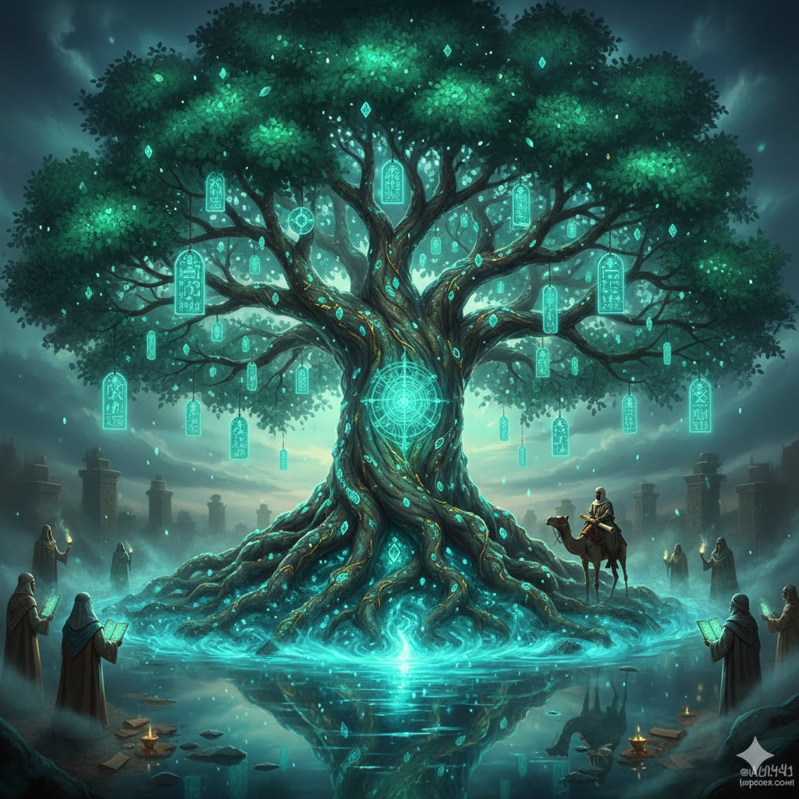
Introduction
Among all ancient beliefs and devotional patterns, "tree worship" emerges as one of the most pivotal anthropological phenomena, owing to its universal diffusion and its profound permeation into the cultural frameworks and ritualistic practices of humanity. Its antiquity is beyond dispute; as historical narrative commenced, this practice was already firmly established within the earliest civilizations. It is probable that the most archaic record of this veneration resides in the engraved cylinders of Chaldea, some dating back to the fourth millennium BCE (4000 BCE). This establishes the tree as one of the most primordial spiritual symbols that shaped the collective consciousness of Mesopotamia and, subsequently, the world.
The "Cosmic Tree" or "World Tree" emerges as one of the most universal myths in human history, representing the axis of existence connecting various realms. While the Norse Yggdrasil is the most renowned archetype, this symbol was equally prevalent among the Chaldeans, Egyptians, Persians, Indians, and Northern European races, extending to the mythologies of China and Japan. Scholars interpret this striking similarity as evidence of prehistoric contact between these disparate peoples or a shared ancestral origin.
The "Sacred Tree" or the "Tree of Life" emerges as a transcultural symbolic construct, established within the collective imagination of most peoples as the embodiment of a spiritual essence that transcends material boundaries. Within mythological consciousness, the tree was never reduced to a mere botanical entity; rather, it was perceived as an ontological space inhabited by the metaphysical—a spiritual force capable of manifesting in human or ethereal forms. The cosmic function of this tree is manifested in its role as the Axis Mundi, the bridge connecting terrestrial and celestial realms, as well as its clinical and spiritual significance as a source of existential healing for the beings encompassing it.
These beliefs have left profound residues in human thought, shaping the aesthetic foundations of ancient arts and literature and molding the ritualistic practices of nearly all religions and civilizations. Scarcely a single geographical region exists that has not deified the tree, where its veneration blended feelings of reverence and awe associated with transcendental powers. This intrinsic connection is exemplified in the contemporary devotional practices of certain communities that continue to regard it as the "World Tree," seeking proximity through sacrifices and the hanging of symbolic votive offerings and scrolls to invoke blessings and ensure spiritual continuity.
History
IRAQ
Huluppu Tree
.jpg)
The Huluppu Tree represents a central mythological element in ancient Sumerian legends (circa 2000 BCE) and is considered one of the oldest written narratives in human history; its name is frequently translated as the "willow tree," though some Arabic interpretations identify it as a type of aquatic tree such as the sidr or buckthorn. The primary and only known narrative regarding this tree comes from the Sumerian poem "Inanna and the Huluppu Tree," which is part of the mythic cycle of Inanna (later Ishtar), and it also appears in "Gilgamesh, Enkidu, and the Netherworld" as a prologue to the Great Epic of Gilgamesh, detailing how the tree was uprooted from the banks of the Euphrates by the wind before being brought by Inanna to her sacred garden in Uruk, thus serving as a cosmic symbol linking gods, heroes, and the underworld in the ancient Mesopotamian consciousness.
The Sumerian legend recounts that at the beginning of creation, following the separation of heaven from earth, the south wind uprooted the "Huluppu" tree from the banks of the Euphrates and swept it away, until the goddess Inanna rescued it and planted it in her sacred garden in Uruk (Warka), tending to it for ten years with the intent of crafting a sacred throne and bed from its wood; however, the tree became inhabited by three creatures that prevented the goddess from approaching: a serpent immune to charms in the roots, the divine storm-bird "Anzu" in the branches, and the demoness "Lilitu" (Lilith) in the trunk, prompting Inanna to seek help from the hero Gilgamesh, who managed with his axe to slay the serpent and drive Anzu and Lilitu into the mountains and wilderness. Gilgamesh then felled the tree and presented its wood to Inanna for her sacred furniture, and as a reward for his bravery, she gifted him the "Pukku" and "Mikku" (mysterious musical or symbolic instruments, likely a drum and drumstick) that came to define his authority and heroism in Mesopotamian heritage.
The vision of Ereshkigal, the Queen of the Underworld, is manifested in her quest to understand the process of "reshaping human consciousness" by analyzing the souls that eventually fade within her realm, considering this knowledge the "hidden treasure" that outweighs her longing for the upper worlds; in her dialogue with Enki, Ereshkigal affirmed her role as the guardian of these cosmic secrets, presenting him with the seed of the Huluppu tree as a symbol of a future destiny and a tool for opening the gates of the realms. She revealed that the growth and maturation of this tree would transform it into a bridge connecting the underworld with the upper worlds and many others, emphasizing that whoever nurtures its ripened seed and possesses her insight will be the one to keep the gates between the lower and upper realms wide open.
When the tree reached its full size, it was destined to serve as a portal for selected souls to ascend from the underworld to heaven and attain eternal life, thus becoming the "Tree of Life." Enki planted the seed on the banks of the Euphrates near Eridu, decreeing that its branches, leaves, and fruits would pass on knowledge and reveal the "ways of becoming" across all worlds and spheres, allowing those who find it to ascend to the highest heights and descend to the deepest depths for healing. This destiny, as Enki clarified, signifies that the tree’s fruits symbolize the divine knowledge intended for humanity, and with every new branch, further paths of existence are revealed. However, Enki also made it clear that this portal to various worlds would not be open to all, but only to those who "find the Tree of Life"—a metaphor for living in accordance with the gods' commandments—a possibility that would only manifest in the distant future once the tree had reached its full maturity.

The Huluppu tree is described in Sumerian myth as a massive and majestic tree with a straight, unbranched trunk, resembling giant sequoias (which became extinct in ancient Europe) more closely than the poplar tree, and it had reached an immense size by 3500 BCE; the text of the myth "Enki and the World Order" highlights its evolved form as the "Mish" tree, which Enki planted in the "Abzu" (the deep waters) after bringing it from the distant underworld, describing it as a mighty entity whose trunk binds heaven to earth, with its abundant fruits hanging like clusters of grapes to cover the land of Sumer with an outpouring of sanctity and knowledge.
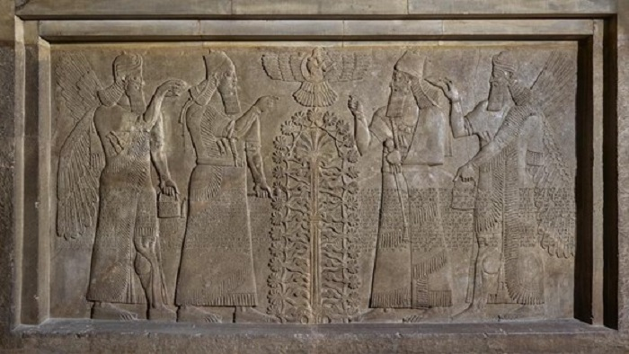
This magical tree, which sprang up in the heart of paradise where the god "Abzu" flowed as fresh waters from its roots, represents the primary mythological embodiment of the emergence of life and consciousness; this ancient Mesopotamian description, linking primordial waters with the tree of knowledge, serves as the archetype that inspired the Book of Genesis in the Bible to describe the "Tree of the Knowledge of Good and Evil" in the Garden of Eden, reflecting a unified cultural conception in the ancient Near East of the tree as a cosmic center connecting the source of biological life (water) with the source of spiritual awakening (knowledge).
Assyrian palace reliefs from Nimrud and Nineveh (9th–7th centuries BCE) frequently show winged genies attending to the Tree of Life. These supernatural beings, often depicted with eagle heads or human faces, hold buckets and cone-shaped objects, as if pollinating or purifying the tree
The genies’ actions suggest the tree required divine care to remain fertile and strong. Their presence reinforced the idea that the king’s palace — and by extension his empire — was under the protection of cosmic order
The palm tree
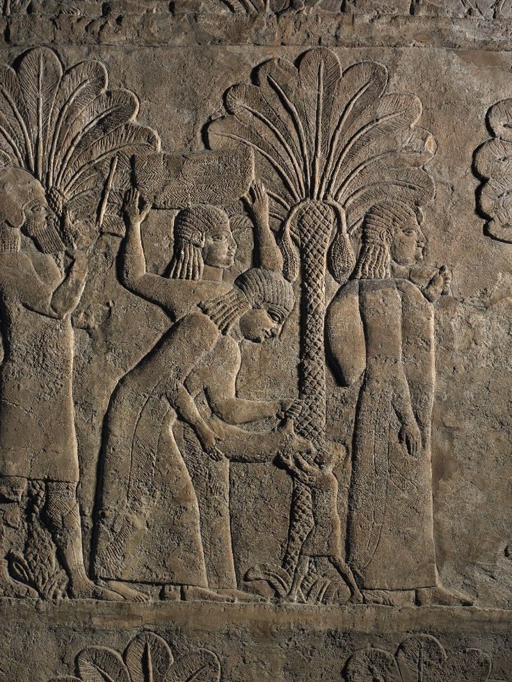
The Palm Tree is the most dominant visual element in Assyrian reliefs, particularly in the Palace of Ashurnasirpal II in Nimrud (Kalhu), where it is depicted as a sacred tree surrounded by priests or winged beings performing rituals suggestive of "artificial pollination" to ensure cosmic fertility; this sacred palm appears in official scenes flanked by kings and winged deities, with clusters of dates prominently displayed as symbols of divine abundance and sustenance. The veneration of the palm was not limited to artistic symbolism but extended to sacred architecture, as palm trunks were utilized as primary columns and supports in the construction of major temples, such as the Temple of the God Sin (the Moon God) in Ur, rendering the palm both a physical and spiritual pillar connecting earthly architecture with heavenly sanctity in Mesopotamian civilization.
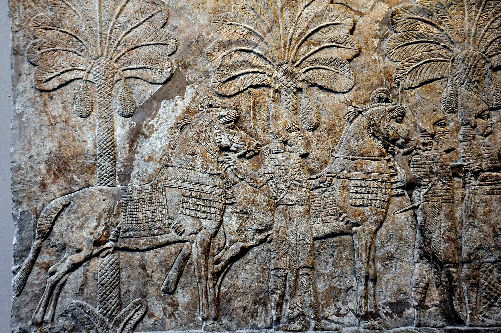
Pomegranate tree
The Pomegranate serves as a profound ontological symbol of fertility, abundance, and prosperity in the ancient Near East, where its deep red color and numerous seeds were associated with the overflow of life and the vitality of the womb and childbirth; this fruit was intimately linked to the goddess Inanna (Sumerian), later known as Ishtar (Akkadian and Babylonian), in her capacity as the goddess of love, sex, war, and fertility. Worshippers would present pomegranate fruits as sacred offerings before her statues to seek blessings and the renewal of life, rendering the pomegranate a visual icon that encapsulates the concepts of reproduction and growth within the ancient Mesopotamian consciousness.
In some texts and art, the Sacred Tree was sometimes depicted bearing pomegranates instead of dates, a symbol of cosmic fertility and renewal.
Some comparative mythology researchers suggest that the Pomegranate is the strongest candidate for the "Tree of Knowledge" in ancient Mesopotamian myths, which served as the primary source for the later Garden of Eden narrative; this proposition is based on the fact that the "apple" was not known in the ancient Near East at that time, whereas the pomegranate was prominently featured as a symbol of knowledge, fertility, and immortality in Sumerian and Akkadian sacred gardens. Its numerous seeds symbolize the "multiplicity of knowledge" and its red color represents the "essence of life," rendering the act of consuming the pomegranate in ancient imagination a symbolic gesture of attaining divine consciousness and accessing the secrets of existence that were once the exclusive domain of the gods.
In ancient Sumerian literature, the Pomegranate was utilized as an explicit ontological symbol for "sexual intercourse" and the reproductive process, a connection inspired by the fruit's physical characteristics; its full, spherical shape was likened to the womb, while the deep red color of its seeds mimicked the blood of life and fertility. Sumerian texts, particularly the love poems attributed to the goddess Inanna and King Dumuzi, employed pomegranate metaphors to describe concepts of passion and physical union, rendering the fruit an expressive medium that merged the beauty of nature with the sanctity of human procreation in the Mesopotamian consciousness.
The pomegranate was prominently featured in Sumerian funerary rituals, where it was customary to offer its seeds to the deceased as sacred offerings intended to grant immortality or facilitate their transition toward "eternal life"; this belief is rooted in the symbolic nature of the pomegranate as a reservoir of countless seeds, rendering it a symbol of the soul's capacity for renewal and rebirth even after departing the body. In the Mesopotamian collective consciousness, presenting the pomegranate to the deceased served as "spiritual sustenance" ensuring vitality within the realm of shadows (the underworld), which explains the discovery of pomegranate models or fruit remains in ancient royal tombs, serving as a bridge between the transience of matter and the permanence of divine existence.
NORSE
Yggdrasil
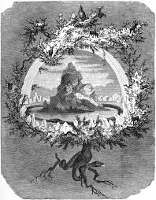
In Norse mythology, Yggdrasil functions as a monumental cosmic axis that interconnects the nine realms of the universe, with its uppermost branches reaching toward the heavens and its roots extending into the subterranean depths. This world tree is sustained by three primary roots that maintain the structural integrity of the Norse cosmos: the first resides in Asgard, the second stretches to the periphery of Jotunheim, and the third penetrates the realm of Niflheim.
The widely accepted etymological interpretation of the Old Norse Yggdrasill is "Odin's horse," a calculated metaphor for a "gallows." This derivation stems from the term drasill, meaning "horse," and Ygg(r), which is one of the numerous epithets of the god Odin. This linguistic connection is supported by the Poetic Edda poem Hávamál, which recounts Odin’s self-sacrifice by hanging from a tree, effectively transforming it into his gallows. Consequently, the poetic kenning "the horse of the hanged" likely evolved into the specific expression "Odin's horse," eventually becoming the definitive name for the World Tree.
Scholarly interpretations regarding the precise etymology of Yggdrasill remain divergent, particularly concerning whether the name independently identifies the tree or if only the full compound askr Yggdrasils (where askr denotes "ash tree") serves as the specific designation. Under this premise, the phrase implies the cosmic tree upon which "the horse of the highest god [Odin] is bound," though both theories rely on a reconstructed, albeit unattested, form *Yggsdrasill. Alternatively, F. Detter posits a third interpretation where the name derives from yggr ("terror"), rendering it the "tree of terror" or "gallows." A fourth etymology, proposed by F. R. Schröder, suggests the name signifies a "yew pillar," deriving the components from roots meaning "yew-tree" and "support," respectively.
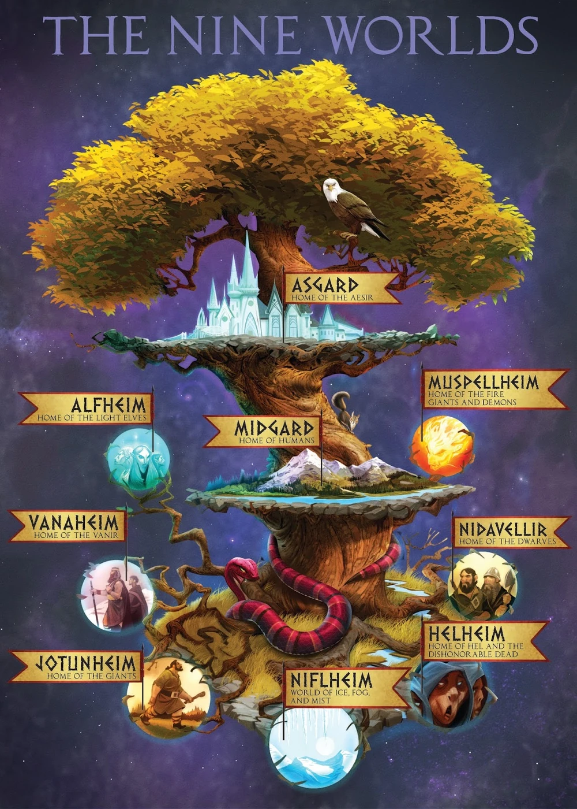
Yggdrasil, also known as the Tree of Life, transcends its status as a mere Viking emblem to function as a fundamental cornerstone of Norse cosmological principles. According to Norse folklore, this monumental tree serves as the vital nexus interconnecting the nine distinct realms of the universe, specifically: Asgard, Midgard, Muspelheim, Jotunheim, Vanaheim, Niflheim, Alfheim, Svartalfheim, and Helheim.
Nine Realms
- Asgard – Home of the Aesir gods.
- Midgard – The realm of humans.
- Vanaheim – Associated with fertility and nature.
- Alfheim – Realm of the Light Elves.
- Jotunheim – Land of the giants.
- Nidavellir – Home of the dwarves.
- Svartalfheim – Realm of the Dark Elves.
- Niflheim – World of ice and mist.
- Muspelheim – Realm of fire.
The Three Wells Beneath Yggdrasil
Yggdrasil's roots extend into three significant wells, each with its own importance:
- Urðarbrunnr (Well of Urd)Located in Asgard, this well is associated with fate. The Norns, three goddesses who control destiny, reside here and water Yggdrasil with its waters to maintain its vitality.
- Mímisbrunnr (Mimir's Well):Situated in Jotunheim, this well is known for its wisdom. Odin sacrificed an eye to drink from its waters, gaining unparalleled knowledge.
- Hvergelmir: Found in Niflheim, this well is the source of many rivers in the Norse world. It's also home to various serpents, including Níðhöggr, who gnaws at Yggdrasil's roots.
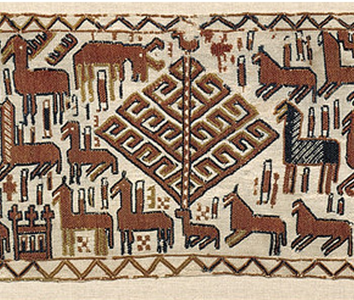
Hilda Ellis Davidson observes that while Old Norse sources frequently reference the existence of nine worlds surrounding Yggdrasil, they lack an explicit definition of their identities, which must instead be deduced from fragmented records. Davidson posits that these identities likely fluctuated over time in response to evolving religious emphases or new imagery, leaving the spatial relationship between the tree and these realms ambiguous; they may have been arranged vertically or clustered around the axis. Despite references to subterranean worlds and celestial realms linked by the rainbow bridge Bifröst, Davidson contends that scholarly efforts to construct a definitive diagram of the Scandinavian cosmos have largely compounded the existing conceptual confusion.
Hilda Ellis Davidson identifies significant parallels between Yggdrasil and the shamanic traditions of northern Eurasia, noting that the conceptualization of a tree traversing multiple realms is a foundational element of the shared lore in this region. This archaic conception, potentially derived from the Pole Star as the celestial center, likely exerted a profound influence on the Scandinavian image of the central tree. Furthermore, Davidson highlights the practices of Siberian shamans, who utilize a central tree as a symbolic ladder to facilitate their ascension into the heavens.
Davidson identifies significant cross-cultural parallels between Yggdrasil and Asian cosmologies, noting that the imagery of an eagle perched atop a cosmic tree and a world serpent entwined around its roots resonates with mythological structures found across Asia. This suggests that Norse cosmology may have been influenced by these Asiatic traditions from a northern geographical context. Conversely, Davidson emphasizes that Germanic peoples historically conducted worship in forest clearings, where a sky god was specifically associated with the oak tree; consequently, the concept of a "central tree" emerged as a naturally intuitive and potent symbol within their indigenous spiritual framework.
Yggdrasil is attested in the Poetic Edda compiled in the 13th century from earlier traditional sources, and in the Prose Edda compiled in the 13th century by Snorri Sturluson. In both sources, Yggdrasil is an immense ash tree that is central to the cosmos and considered very holy. The gods go to Yggdrasil daily to assemble at their traditional governing assemblies. The branches of Yggdrasil extend far into the heavens, and the tree is supported by three roots that extend far away into other locations; one to the well Urðarbrunnr in the heavens, one to the spring Hvergelmir, and another to the well Mímisbrunnr. Creatures live within Yggdrasil, including the dragon Níðhöggr, the squirrel Ratatoskr, the hawk Veðrfölnir, and the stags Dáinn, Dvalinn, Duneyrr and Duraþrór.
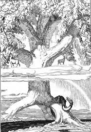
In the Old Norse poem Völuspá, Yggdrasil is characterized as the "friend of the clear sky," reaching a majestic height where its snow-capped crown transcends the clouds and its leaves dispense the "dews that fall in the dales." The Hávamál further depicts the tree as "windy," perpetually buffeted by fierce gales at its summit, while its roots remain an enigma, extending into the subterranean underworld—a realm inaccessible to the living, with the exception of shamans. Beyond its physical grandeur, Yggdrasil serves as the central locus of divine governance, where the gods convene daily to hold their sacred council.
Other scholars, such as F. R. Schröder, propose an alternative etymology identifying the tree as a "yew pillar." This interpretation is grounded in the historical fact that the yew tree was held sacred within Germanic traditions. Consequently, this theory suggests that the cosmic axis was modeled after the yew, reflecting its profound spiritual and symbolic significance in ancient Germanic culture.
Certain academic studies, notably G. Ronald Murphy’s work in "Tree of Salvation," argue that Christian missionaries in the North strategically utilized the imagery of Yggdrasil as a cultural bridge to facilitate the understanding of the Crucifix. By framing the Cross as a "tree of salvation," they employed a method of cultural syncretism, aligning profound Norse cosmological symbols with Christian theology to render the new spiritual concepts more accessible to the Scandinavian collective consciousness.
Historical consensus suggests that Germanic peoples practiced the actual veneration of trees, with Irminsul serving as a prominent historical archetype of this belief. Regarded as a cosmic pillar connecting the heavens and the earth, Irminsul functioned as a vital symbol of universal order. This evidence supports the scholarly contention that Yggdrasil likely represents a mythological evolution of a concrete religious symbol, grounding the abstract world tree in the tangible spiritual practices of ancient Germanic culture.
Mímameiður(Mimameidr)
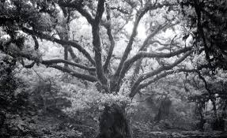
In the Old Norse poem Fjölsvinnsmál, Mímameiðr (Mimir's Tree) is depicted as a colossal tree whose branches span all lands, possessing an elemental immunity to both fire and metal. This tree is characterized by its life-sustaining fruit, which aids in childbirth, and by the rooster Víðópnir, which perches upon its highest bough. Due to striking descriptive parallels, scholars generally identify Mímameiðr as an alternative designation for the world tree Yggdrasil, frequently associating it with Hoddmímis holt—the predestined sanctuary where Líf and Lífthrasir are to seek refuge during the cataclysmic events of Ragnarök.
The etymological interpretation of the term Mímameiðr is based on a linguistic analysis of two key components of Old Norse: the prefix Mími-, referring to Mímir, the mythical figure embodying wisdom and esoteric knowledge, and the suffix -meiðr, meaning "tree" or "pillar." Accordingly, this structural derivation suggests that the most likely meaning is "Mímir's tree" or "tree of wisdom."
In Old Norse, the Tree of Life (Yggdrasil) is called Mimamider. According to most Norse mythologists, the sacred Tree of Life sprouted from a well called Urd.
In his "Dictionary of Northern Mythology" (1993), Rudolf Simek directly associates Mímameiðr with Mímisbrunnr (Mimir's Well), the legendary spring of wisdom situated beneath one of the roots of Yggdrasil. This academic correlation reinforces the theory that these various designations represent different manifestations of the same cosmic entity, where the symbolism of the tree and the well of knowledge converge to form a pivotal gravitational center within the Norse mythological framework.
Donar’s Oak
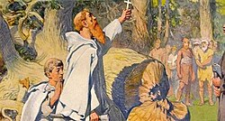
The Donar's Oak tree, also known as the Thor Oak, is a central example of the reverence of trees and sacred groves among the Germanic peoples, as it was located in the present-day Hesse region of Germany. According to historical sources in the eighth century, specifically the book “Vita Bonifatii” by historian Willibaldo, the Anglo-Saxon missionary Saint Boniface cut down this tree in a symbolic move aimed at undermining German paganism, and its wood was later used in the construction of a church dedicated to Saint Peter on the same site.
In Germanic mythology, Donar's Oak—associated with the god Thor—held a preeminent status as a sacred emblem of power and authority, serving as a primary site for rituals and votive offerings. The symbolic connection between the tree and the god of thunder is so profound that lore suggests his hammer, Mjolnir, was concealed within its boughs to safeguard it from adversaries. Beyond its theological sanctity, the oak functioned as a vital socio-legal nexus; it was the designated location for communal assemblies and judicial proceedings, underscoring its dual role as a cornerstone of both the spiritual and civil order in ancient Germanic society.
The religious history of the Germanic peoples was defined by the profound veneration of sacred trees and groves, which consequently became primary targets for destruction by Christian missionaries during the era of conversion. Scholar Ken Dowden observes that behind these physical historical entities—such as Donar's Oak and the Irminsul (both felled in the 8th century), as well as the sacred tree at Uppsala described in the 11th century—lies a singular mythological archetype: a monumental universal tree. This archetype is articulated in Norse mythology as Yggdrasil, serving as the transcendent model that informed the spiritual significance of its terrestrial counterparts.
The oak tree situated in the town of Geismar, central Germany, functioned as a sacred site dedicated to the god Thor, a fact preserved through historical accounts documented by Christian chroniclers. Despite the somewhat dramatized nature of the narratives describing its destruction, these records serve as a critical historical testament to the cultural eradication of indigenous European traditions. These accounts illustrate the fundamental conflict between nature-based Germanic paganism and the systematic Christianization of Europe, which sought to replace ancestral symbols with new ecclesiastical frameworks.
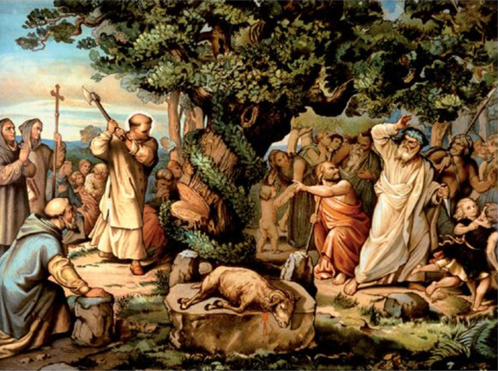
Late iterations of the legend, particularly those emerging in the 19th and 20th centuries, promote a popular narrative linking the felling of Donar's Oak by Saint Boniface to the origins of the Christmas tree. These accounts claim that a small evergreen fir tree miraculously appeared behind the fallen oak, which Boniface then designated as a symbol of eternal life and the "Christ Child." While this story has gained global traction as a miraculous explanation for a modern tradition, scholars categorize it as a later folkloric embellishment. It is notably absent from the original 8th-century hagiography by Willibald, serving instead as a prime example of mythopoeia—the proactive reshaping of ancient legends to suit contemporary religious and cultural contexts.
Oral traditions across German regions, particularly in Hesse, present divergent accounts of the metaphysical repercussions following the felling of the sacred oak. While some folklore characterizes the event as a catalyst for divine retribution—manifesting as severe storms and pestilence triggered by Donar’s wrath—other narratives employ animistic imagery, claiming the tree "bled" or emitted a human-like shriek upon being struck. Conversely, a significant counter-narrative emphasizes "divine inaction," suggesting that the absence of a miraculous intervention, such as thunder or lightning, undermined the perceived potency of the god. This perceived failure served as a pivotal psychological catalyst for the mass conversion to Christianity within the collective consciousness of the era.
Barnstokkr
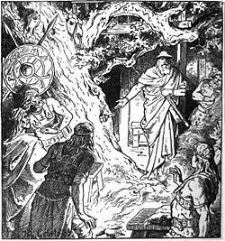
The Barnstokkr (Old Norse for "child-trunk") stands as a pivotal symbol in Norse mythology, situated at the center of King Völsung's hall as detailed in the 13th-century Völsunga saga. The tree is the site of a defining heroic moment when a tall, one-eyed stranger (widely identified as Odin) thrusts a sword into its trunk, a weapon that only Sigmund is destined to retrieve. Academic theories suggest that the Barnstokkr serves as a domestic manifestation of the "World Tree" archetype within Germanic paganism, linking the lineage of the Völsung clan to the broader cosmic order and the veneration of sacred arboreal structures.
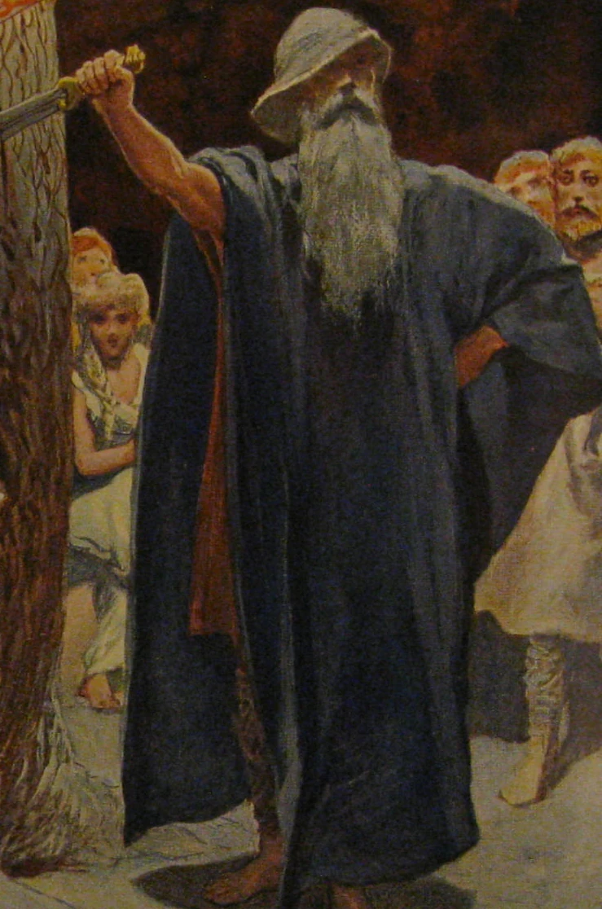
During a banquet, a strange, one-eyed old man (later revealed to be Odin himself) entered the hall and plunged his sword into the tree. Only Prince Sigmundur was able to pull the sword out, and it was later called the Grammer, the iconic weapon also wielded by his son Sigurdur throughout the epic. Scholarly theories have been proposed regarding the symbolism of the Barnsstocker and its connection to other trees in Germanic paganism.
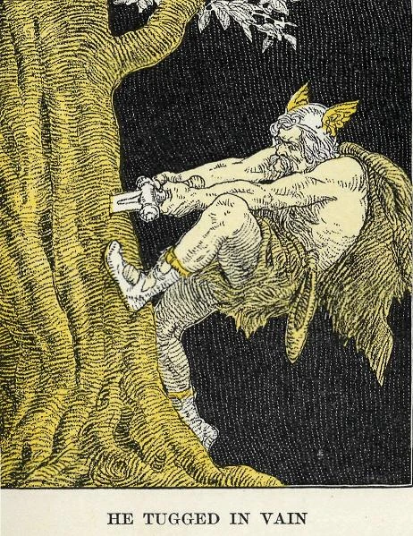
Hilda Ellis Davidson identifies a profound link between the sword embedded in the Barnstokkr and pre-Christian Germanic marriage oaths, suggesting that the ceremonial display of a sword before a bride served as a virility symbol associated with fertility. Davidson supports this semiotic connection by citing 17th-century Swedish rural records where trees or "pillars" played a central role in wedding festivities. Furthermore, she highlights a Norwegian custom persisting into the modern era, wherein a groom plunges his sword into a ceiling beam—a symbolic extension of the central tree trunk—to test the "luck" of the marriage by the depth of the resulting scar. This reinforces the concept of the tree as a cosmic witness to domestic and social covenants.
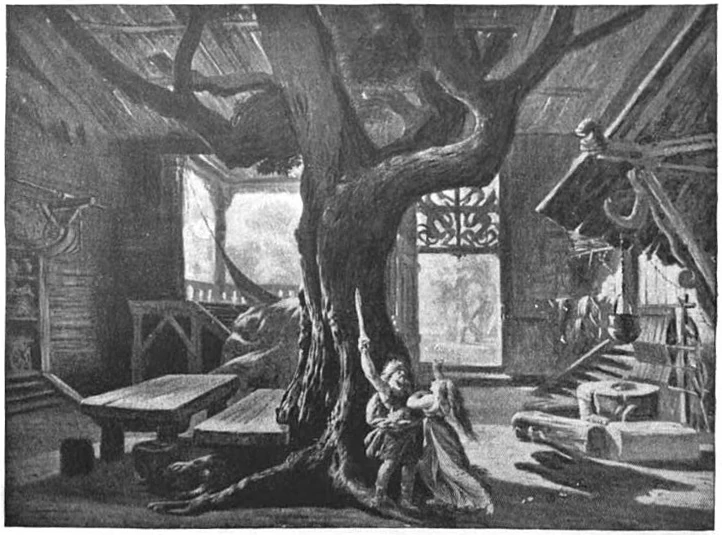
Andy Orchard (1997) asserts that the functional and spatial role of Barnstokkr—as a monumental tree supporting and branching through the roof of Völsung’s hall—strikingly mirrors the cosmological positioning of Yggdrasil in relation to the hall of Valhalla. Beyond these structural parallels, Orchard identifies a compelling literary resonance between Sigmund’s unique ability to withdraw the sword from the tree’s trunk and the Arthurian legend of King Arthur pulling Excalibur from the stone. This comparison suggests a recurring heroic motif within European lore, where the act of retrieving a fixed weapon serves as a testament to divine election and the hero’s destined sovereignty over the natural and cosmic order.
Scholar Jesse Byock (1990) posits an etymological theory suggesting that Barnstokkr might not be the tree's original name, proposing instead bran(d)stokkr as a plausible precursor. In this view, the prefix brandr (firebrand or hearth) reinforces a structural connection to the central fire of the hall. Byock notes the text's use of eik (oak) and apaldr (apple tree)—terms often used generically by Icelanders for any tree—but suggests that the specific reference to an apple tree may invoke the symbolic resonance of the goddess Iðunn’s apples of immortality. Ultimately, Byock theorizes that these layers of meaning further align the Barnstokkr with the world tree Yggdrasil, framing it as a domestic axis that bridges the sanctity of the hearth with the enduring vitality of the cosmos.
Uppsala
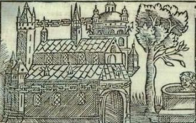
The Sacred Tree at Uppsala, located in Gamla Uppsala, Sweden, stands as one of the most significant physical landmarks of Norse paganism during the latter half of the 11th century. Although historical documentation of the tree is less extensive than that of the renowned temple it accompanied, it remains a vital symbol of pre-Christian religious orthopraxy, functioning as a terrestrial manifestation of high cosmic archetypes. Historians argue that its presence at the heart of the Uppsala cultic complex reflects the profound integration of sacred natural spaces with systematic ritual practice within the ancient Swedish consciousness.
The most detailed historical account of the Sacred Tree at Uppsala comes from the 11th-century chronicler Adam of Bremen in his work Gesta Hammaburgensis Ecclesiae Pontificum. He describes a colossal, evergreen tree of unknown species situated beside the great temple dedicated to Thor, Odin, and Freyr. The site’s sanctity was defined by a sacrificial well and a "sacred grove" where elaborate rituals occurred every nine years, involving the suspension of human and animal sacrifices from the branches. The ambiguity surrounding the tree’s botanical species suggests its transcendent symbolic status, reinforcing scholarly parallels with the world tree Yggdrasil as a living axis where life, death, and the cosmic order converge.
The Hervarar saga provides a compelling literary account of the sacred tree's role in political and religious rituals, specifically during the Swedish pagan reaction led by Svein, the brother-in-law of King Inge. This narrative highlights the ancient Indo-European tradition of hippophagy (horse sacrifice), where a horse was slaughtered and its blood used to besmear the sacred tree—a symbolic act intended to reconsecrate the covenant between the people and the ancestral gods. This pivotal event illustrates how the tree functioned as a locus for reclaiming pagan identity and political legitimacy, resulting in the expulsion of the Christian monarch and the restoration of traditional sacrificial rites that bound the blood of the offering to the enduring vitality of the cosmic symbol.
The botanical identity of the Uppsala tree has been a subject of extensive scholarly debate. A significant number of researchers identify it as an Ash tree, drawing a direct taxonomic and symbolic parallel to the world tree Yggdrasil. Conversely, scholar Fritz Läffler proposed that it was a Yew tree, arguing that the yew's genuine evergreen nature and exceptional longevity align more precisely with Adam of Bremen's description of a tree that remains "green in both summer and winter." This identification further enhances its symbolic association with immortality and the ritual significance appropriate for such a paramount religious center.
CELTIC
Oak
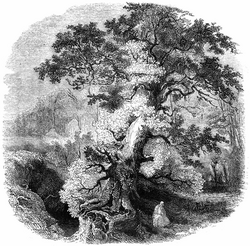
The Oak Tree, according to the Celts, is the undisputed queen among the sacred trees, and is considered a symbol of strength, wisdom, immortality, and protection. It was the focus of Druidic religion and ritual in Britain, Ireland, Gaul (ancient France), and parts of Central Europe.
The oak's deep roots symbolize the underworld, its trunk the human realm, and its towering branches the upper world. It is a kind of axis mundi (axis of the universe) for the Celts, similar to Yggdrasil (but Yggdrasil is ash, while the oak is king in Celtic tradition). In some narratives, it is considered a "door" to other worlds (from the word "door," which is etymologically related to oak in some Indo-European languages).
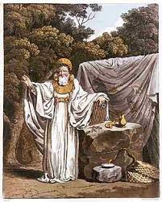
The word "Druid" is one of the most indicative terms of the organic connection between wisdom and nature in ancient Celtic culture; it is linguistically derived from the Celtic root "dru-wid". This term is composed of two segments: "dru," meaning "oak" (the tree of strength and immortality), and "wid," meaning "knowledge" or "vision." Consequently, the philosophical title of a Druid is "Oak-knower" or "Oak-wise," reflecting their status as guardians of the forest's secrets. Sociologically, Druids were not merely priests but scientists and an intellectual elite who performed their sacred rituals exclusively in "Oak Groves," believing that the cosmic spirit manifested within the branches of this resilient tree. This naming embodies the essence of Celtic spirituality, which does not separate rational knowledge from the revelation derived from observing nature, transforming the oak grove from a mere geographical location into an open temple and a laboratory for cosmic wisdom.
The most famous Druid ritual is recorded by Pliny the Elder (1st century AD): The Druid priest (dressed in white) ascends a sacred oak, cuts the mistletoe growing on it with a golden sickle on the sixth day of the lunar month, and then sacrifices two white bulls. The mistletoe is used to treat poisoning and infertility and is believed to be a divine gift that descended upon the oak with lightning.
Oaks are associated with higher deities such as Taranis, the Gaul god of thunder and storm, and Dagda in Irish mythology (god of fertility and strength). The Celts believed that oaks attracted lightning more than others (due to their high water content and height), as if a god was descending on them. The rustle of its leaves is said to carry divine messages.
The ancient Britons under Roman occupation maintained their spiritual roots through the worship of "Daron," the goddess of the majestic oak tree, whose name is derived from the ancient Celtic root signifying "oak" and "steadfastness." The memory of this goddess remains alive in the geographical and mythological landscape of Wales, specifically in the region of "Gwynedd", where her name is immortalized by a stream carrying the same sacred connotation
Ash
The Ash tree is a fundamental pillar of the sacred trinity among the Druids, forming with the "Oak" and the "Thorn" (Oak, Ash, Thorn) the spiritual framework of ancient Celtic forests. In the Celtic tree alphabet known as "Ogham," this tree represents the letter "Nion" (or Nuinn), a symbol embodying vital force and the capacity for deep healing. Sociologically and philosophically, the Ash was viewed as a cosmic bridge achieving balance between the elements and a channel for transition between spiritual and material realms. This made its wood the preferred material for crafting sorcerers' wands and warriors' spears to ensure victory and protection. This sanctity epitomizes the concept of "connection" in Celtic thought, where the Ash's roots reach deep into the earth while its branches touch the sky, proclaiming the unity of existence and the interconnectedness of human destinies with nature.
In British folklore the ash was credited with a range of protective and healing properties. Most of these were related to child health. Newborn babies were popularly given a teaspoon of ash sap. Ailing children, especially those suffering with rupture or weak limbs, would be passed naked through a cleft in an ash tree or ash sapling, to cure them. The cleft was often made for the purpose and bound together again after the ceremony to heal over as the child also healed. Some folklore then suggested an intimate bond between the welfare and fate of the tree and person. Harm to the tree was reflected in the healed person’s life, leading people to become understandably protective of ‘their’ ash tree.
Though there does not appear to be any religious reason why this tree should be associated with Ash Wednesday, the mere association of the words is obvious. In parts of England children used to bring a twig of black-budded ash to school on this day. Any child who failed to remember this risked having his or her feet stomped on by other ash-twig-bearing children!
BUDHISM
The Jaya Sri Maha Bodhi
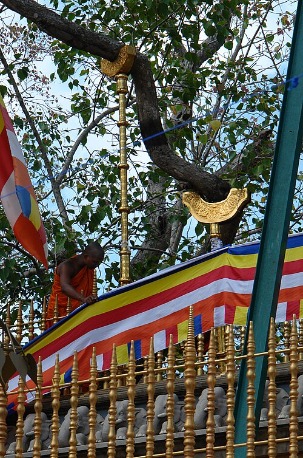
The Jaya Sri Maha Bodhi, situated within the Mahamewna Gardens of the UNESCO-listed city of Anuradhapura, Sri Lanka, stands as the most ancient living relic in Buddhist history. It is recognized as a direct biological descendant of the southern branch of the original Bodhi tree in Bodh Gaya, under which Siddhartha Gautama attained Enlightenment. Brought to the island in 236 BCE by the Buddhist nun Sanghamittā, daughter of Emperor Ashoka, during the reign of King Devanampiya Tissa, the tree is now over 2,300 years old. It holds the distinction of being the oldest human-planted tree in the world with a verified historical date. Its establishment and evolution into a primary pilgrimage site are meticulously chronicled in the Mahavamsa (The Great Chronicle), framing the tree as a living testament to the continuity of sacred tradition and spiritual resilience.
In the 3rd century BC, it was brought to Sri Lanka by Sangamitta Theri (Pali; Skt.: Sanghamitra), the daughter of Emperor Asoka and founder of an order of Buddhist nuns in Sri Lanka. In 288 BC it was planted by King Devanampiya Tissa on a high terrace about 6.5 m (21.3 ft) above the ground in the Mahamevnāwa Park in Anuradhapura and surrounded by railings
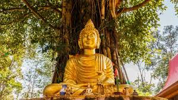
Although the original tree no longer survives, its botanical descendants have been venerated for over two millennia, representing a historical saga of destruction and miraculous regeneration. The Bodhi Tree and its successors endured several phases of systematic eradication, notably under Emperor Ashoka and Queen Tissarakkha in the 3rd century BCE, through the religious persecutions of Pushyamitra Shunga, and later its felling by King Shashanka around 600 CE. Nevertheless, its persistent survival through the replanting of surviving saplings has transformed it from a mere biological entity into a symbol of mythological resilience. It stands as a living testament to the cycles of "birth and rebirth" (Samsara) in Eastern philosophy, mirroring the endurance of European sacred trees that persisted in the collective memory despite historical efforts to uproot them.
Pippala Tree
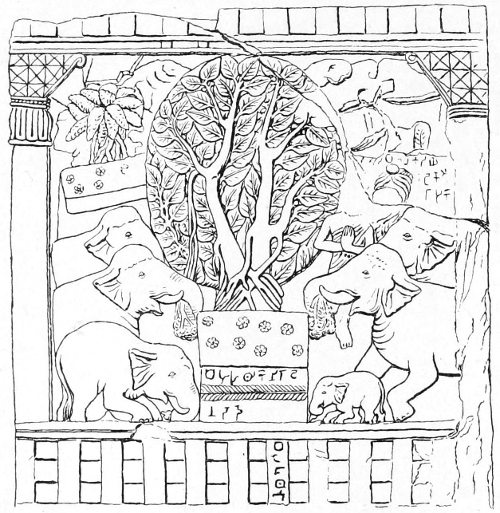
The sacred fig tree (Bipala) is central to the Buddhist world, and it is the same tree under which Gautama Buddha attained enlightenment. Ancient Bharhot reliefs offer striking visual documentation of the veneration of this tree; it is depicted not merely as a natural element, but as a dedicated entity within a sacred structure. This structure consists of an open, columned building surmounted by a floor adorned with niches, canopies, and ribbons of hanging branches.
The sculpture is teeming with intricate ritualistic details: winged celestial figures bearing flower garlands, and "Naga" kings (mythological serpents) gathered before the empty throne placed beneath the tree—a throne symbolizing the aniconic presence of the Buddha. This reverence transcends humanity and the supernatural to encompass the animal kingdom; other carvings depict elephants performing religious rites for the Banyan tree, utilizing their trunks to hang garlands upon the branches. These scenes vividly demonstrate that in ancient Buddhist thought, the tree was not merely a symbol but a "living sanctuary" that commanded the devotion of all beings, from the majestic elephant to the legendary king.
HINDUISM
Kalpavriksha (Kalpadruma)
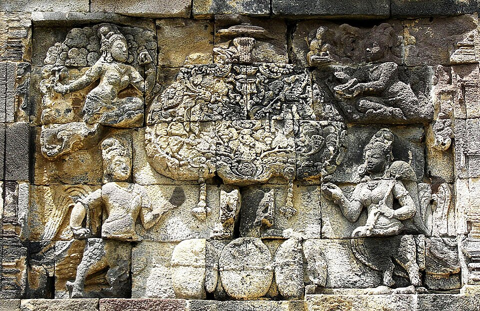
The Kalpavriksha, or "wish-fulfilling tree," stands as a central icon within the Hindu Puranas. Guarded by the Gandharvas in the celestial gardens of Amaravati under the dominion of Indra, this divine tree emerged as one of the miraculous treasures during the legendary "Churning of the Milky Ocean," a cosmic saga undertaken by the devas and asuras in search of the nectar of immortality. Described with a mesmerizing golden aura, the Kalpavriksha is regarded as a sentient entity that responds to sacred chants; tradition holds that there are five distinct varieties, each capable of granting specific types of wishes. This belief is not confined to Hinduism alone but also permeates Jain cosmology, establishing the Kalpavriksha as a "Universal Tree" that transcends sectarian boundaries, symbolizing the profound human aspiration to manifest desires through divine grace.
The grandeur of mythological conception in the Vedic texts is manifested through the Kalpadruma, a colossal, cloud-like tree rooted upon a precipitous mountain peak. This tree was not merely a botanical entity but a primordial source of illumination; legends recount that its majestic shadow lit the world during both day and night, in an ancient era preceding the creation of the sun and moon. It embodies the concept of "essential light" immanent within nature, where the tree antedates celestial bodies in the cosmic order, serving as a universal beacon that bestowed life and vision upon the world before the establishment of known astral cycles.
Kalpavriksha, the tree of life, also meaning "World Tree", finds mention in the Vedic scriptures. In the earliest account of the Samudra Manthana, or the "churning of the ocean of milk". Kalpavriksha emerged from the primal waters during the ocean churning process along with Kamadhenu, the divine cow that bestows all needs. The tree is also said to be the Milky Way or the birthplace of the stars Sirius. The king of the devas, Indra, returned with this Kalpavriksha to his abode in paradise and planted it there. The tree also finds mention in the Sanskrit text Mānāsara, part of Shilpa Shastras.
Some lateral narratives in Hindu mythology add a profound moral dimension to the story of the Kalpavriksha, suggesting that its original abode was actually on Earth, accessible to all of humanity. However, human misuse of this divine gift—the shifting of desires from spiritual necessity to material greed—prompted the god Indra to relocate the tree to his celestial realm of Amaravati. This symbolic migration of the tree from Earth to Heaven embodies the concept of "Paradise Lost" due to a lack of self-purification (Tazkiyah). it underscores the belief that absolute knowledge or power (represented by the tree) requires moral maturity; otherwise, a blessing transforms into a curse. Thus, the tree’s presence in the heavens serves as a goal for the seeker to elevate their consciousness before proving worthy of its fruits.
The Kalpavriksha is one of the most sacred symbols in Indian mythology, its origin intertwined with one of the greatest cosmic events: the Churning of the Milky Ocean (Samudra Manthan). As the gods (Devas) and demons (Asuras) strove to extract the elixir of immortality (Amrita), this wondrous tree emerged from the depths of the ocean as one of the fourteen precious jewels (Ratnas) gifted to the world.
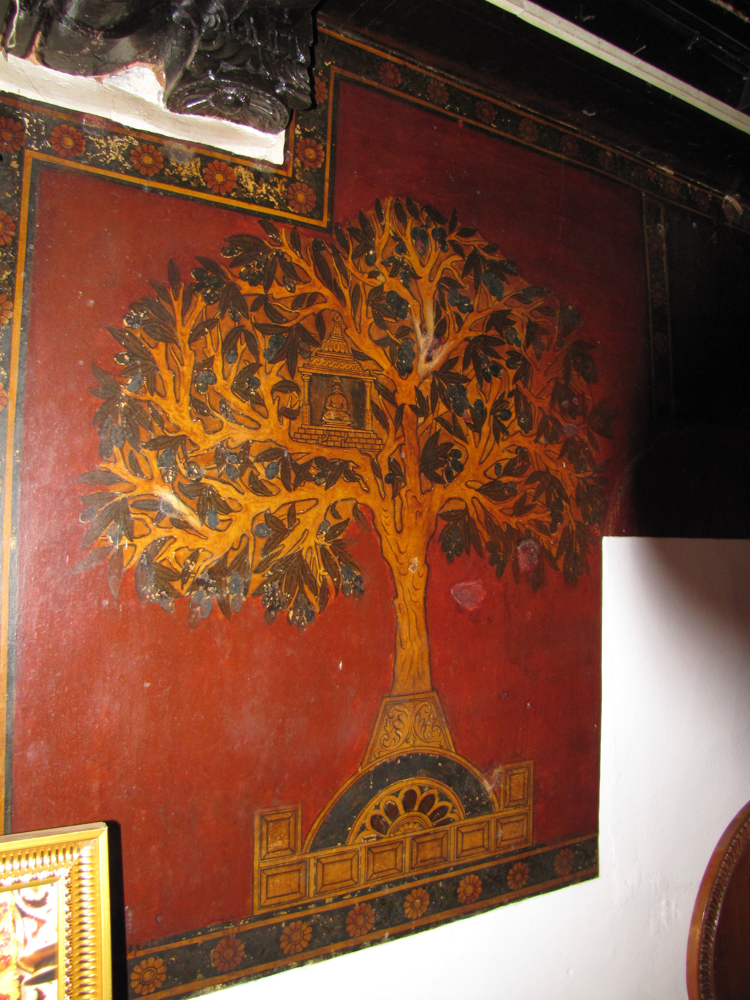
In Hindu mythology, the symbol transcends the material plane to become an embodiment of the universe itself, where the Kalpavriksha is interpreted as a manifestation of Shakti—the creative divine energy that bestows abundance and fulfillment upon existence. In the Bhagavad Gita (15:1), Lord Krishna elevates this symbol to a metaphysical level, identifying Himself as the "Ashvattha" (the Sacred Fig)—the inverted cosmic tree whose roots are in the heavens and whose branches extend into the earth. This identification between the Kalpavriksha and the Ashvattha represents the "terrestrial incarnation" of divine energy, where the tree serves as a conduit through which cosmic equilibrium and divine grace flow into the material world.
Among the types of Kalpavriksha tree, we find Parijata: the most famous type, a tree with fragrant white flowers. It is said that Krishna stole it from Indra and planted it in the garden of his wife Satyabhama. Banyan and Peepal are often symbolized by them.
It was mentioned in a group of Hindu texts, where in the Mahabharata and Ramayana it is mentioned as a tree that grants all wishes. The Puranas describe it as one of the treasures that emerged from the sea of milk. In Buddhism and Jainism, it also appears as a sacred tree in heaven.
Soma Tree
The concept of Soma in Vedic philosophy transcends that of a mere tree or plant, existing as a dual-natured entity that unites matter with divinity. At its core, it is a sacred plant (or mythological tree) from whose essence the elixir of immortality, known as Amrita or "Soma Rasa," is extracted. This elixir was not merely a ceremonial liquid but represented the very essence of life, power, and transcendental consciousness.
In the Rigveda—the oldest of Hindu scriptures—Soma appears in a unique form, being extolled simultaneously as a deity (Lord Soma) and as a tangible substance. It is the vital essence that grants the gods their strength and the medium that bridges the human and celestial realms. The veneration of Soma reflects the ancient vision of trees and plants as vessels of divine potency, where the products of the earth are transformed into a means of attaining eternity and transcending the boundaries of mortality.
The mystical Soma tree in Indian traditions transcends the boundaries of vegetation to become the "primordial matter" and the architect of the cosmos. Not only did it produce the elixir of immortality, but it was also a comprehensive cosmic tree bearing seeds and fruits of every kind—a genetic reservoir for all life. From the wood and grandeur of this tree, the Immortals fashioned the heavens and the earth, rendering it the raw material from which existence was constructed.
Mythology places its abode in the Third Heaven, where its branches spread to overshadow the universes. Beneath this vast canopy, the gods sit in their celestial assembly, sipping the precious Soma—the elixir that ensures their perpetual immortality and maintains the balance of cosmic forces. This imagery epitomizes the tree as the center of stability and the source of eternal renewal.
The Dukh Bhanjani Ber
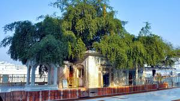
Sacred trees in Sikhism represent a fundamental link between nature and the spiritual history of the Gurus, as most are associated with "Sakhis" (miraculous stories) or pivotal historical events. The "Dukh Bhanjani Ber" (the tree that removes sorrows), a jujube tree located within the Harmandir Sahib (Golden Temple) complex in Amritsar, stands out as one of the most sacred. Sikhs believe that the husband of Bibi Rajani, who suffered from leprosy, was completely cured after bathing in a small pool of water near it, leading Guru Ram Das to name it the "Remover of Sorrows." Today, the tree is a site for petitionary prayers, especially for those seeking cures for untreatable diseases and infertility. Similarly, another jujube tree at "Gurdwara Ber Sahib" in Sultanpur Lodhi is associated with Guru Nanak; believers hold that the "Mul Mantar" (the fundamental chant of Sikhism) was revealed near this tree, transforming these botanical entities into living witnesses of miracles and divine revelation.
Banyan Tree
.jpg)
The Banyan tree (Ficus benghalensis), known locally as "Vat" or "Bargad," occupies the highest tier of reverence in Indian culture; it is not merely a botanical specimen, but a living icon of "Akshaya Vata" (the Imperishable Tree). In the mythology of the sacred city of Varanasi, it is revered as the "Tree of Life," embodying eternity and boundless generosity, its sprawling canopy likened to the divine shelter provided by the Creator to His followers. The "Puranic" texts immortalize the Banyan as a divine manifestation, owing to its unique architectural structure—with its descending aerial roots and wide-reaching branches—which grants it an infinite capacity for regeneration. The prevalence of Banyan motifs in temple architecture across India reflects a profound belief in its role as a bridge between the finite and the eternal, anchoring the earthly realm to the divine.
In Hindu mythology, the banyan tree is associated with god Vishnu, and it is believed that god Krishna rested under a banyan tree. The tree's vast canopy provides a gathering place for village communities, making it a central part of social and religious life.
Often used for meditation and spiritual reflection. It represents the Trimurti (Vishnu, Shiva, and Brahma) and is a potent symbol of life and fertility. Hindu women often worship the Banyan tree, praying for the long life of their husbands and sons. It’s a place where prayers echo with hopes for generational continuity.
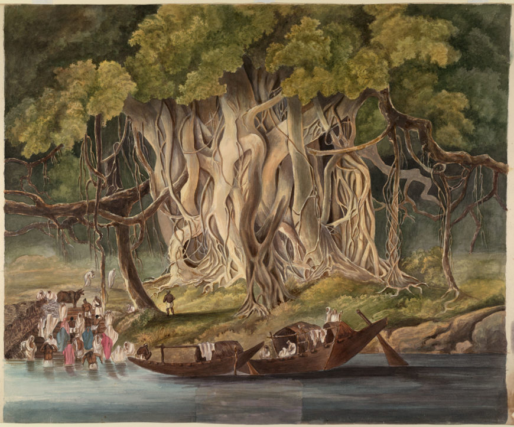
In Hindu mythology, the Banyan Tree is supposed to provide fulfilment of wishes and provide material gains. According to the Agni Purana, one of the 18 Mahapuranas, an important sub-sect of Hindu religious texts, the Banyan Tree is symbolic of fertility and provides help to childless couples. Therefore, the Banyan Tree is never supposed to be cut. This also symbolises its importance as the Tree of Life. The Banyan tree not only propagates itself through its fruit but over time sends down aerial roots that become supportive trunks themselves. Over time, the tree will have thousand such trunks. Due to its serial roots, the tree is referred to as the “Bahupada” or the one with several feet.
Peepal Tree
This tree represents the Trimurti, with Brahma residing in the roots, Vishnu in the trunk, and Shiva in the leaves. It’s also associated with Vishnu, and sometimes Lakshmi, embodying prosperity and spiritual growth. The Peepal tree’s presence often marks a place of reverence and quiet contemplation
Others
Tree worship in India manifests as an archaic spiritual framework. In the absence of stone temples and altars, the Garo people erect a bamboo stalk before their huts to serve as a ritualistic sanctuary for offerings. Similarly, on a mountain in Travancore, a colossal ancient tree functioned as a natural "cathedral" and the abode of a potent deity, where indigenous peoples delivered orations and presented sacrifices—until an English missionary felled it to construct a chapel on its site, marking a symbolic clash between institutional and natural religions. This deep-seated sanctity is corroborated by the Vedas and was noted by the companions of Alexander the Great, who observed that Indians venerated trees as deities, such that harming them was a capital offense, establishing the tree as a supreme manifestation of divinity in the ancient Indian consciousness.
MAYA
Ceiba pentandra
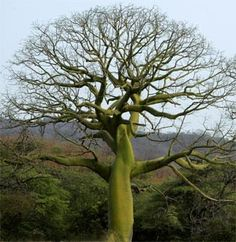
In the Mayan civilization (which flourished from about 2000 BCE to 1500 CE in Mesoamerica, particularly in the Yucatán Peninsula and adjacent areas of Mexico, Guatemala, Belize, and Honduras), trees were a central element in cosmology, mythology, and rituals. There is no single, literal tree called the "Tree of Life," as in some other cultures, but rather the World Tree, which connects the three realms and is a vital symbol of creation, balance, fertility, and immortality.
The Ceiba tree (Ceiba pentandra and also known as the kapok or silk-cotton tree) is a tropical tree native to North and South America and Africa. In Central America, the ceiba had great symbolic importance to the ancient Maya, and its name in the Mayan language is Yax Che (“Green Tree” or “First Tree”).
The ceiba was the most sacred tree for the ancient Maya, and according to Maya mythology, it was the symbol of the universe. The tree signified a route of communication between the three levels of earth. Its roots were said to reach down into the underworld, its trunk represented the middle world where the humans live, and its canopy of branches arched high in the sky symbolized the upper world and the thirteen levels in which the Maya heaven was divided.
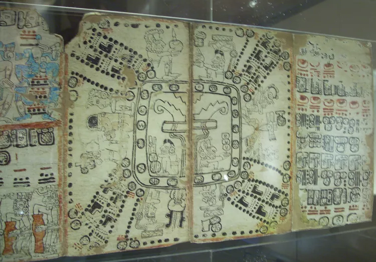
The "Cosmic Tree" (Axis Mundi) in human mythology represents a cohesive existential structure, bridging the realms of spirit and matter. It begins with Devonian roots deep within natural history—which reshaped Earth’s chemistry and ecosystem—only to transform in human consciousness into a ritual ladder (as seen in Siberian shamanism) linking the seven heavens to the underworld, and a bridge through which flows the spiritual force or "Mana" that grants efficacy to all things. Ancient cultures distilled this tree as a mirror of the universe: from the "Dragon’s Blood" of Socotra as a witness to human tragedy, to the "Aal Luuk Mas" of the Sakha people as a nursery for souls, and finally to the Maya codices that linked sacrifice to the continuity of creation. As the trunk represents the mandated human present, its branches remain stations for cognitive ascent. The symbolism of its "withering" or "extinction" reveals the fragility of the balance between the consumption of material resources and spiritual transcendence. Ultimately, the tree remains the eternal bond that transforms "clay" into "consciousness," rendering the human journey of vicegerency a continuous process of refinement between the stillness of roots and the majesty of branches reaching toward the Absolute.
The fine root system symbolizes the dwelling place of the dead, or the underworld. The trunk is the middle world, or earth where humans reside and the umbrella of branches above opens up to create a pathway to the heavens. According to Mayan mythology, the roots provided shelter for bats, a symbol of the cold, dark underworld. Above on the ground’s surface, an ecosystem consisting of anteaters, insects, frogs and birds bustles with life. The wide crown of branches above is occupied by the eagle, which represents the celestial realm.
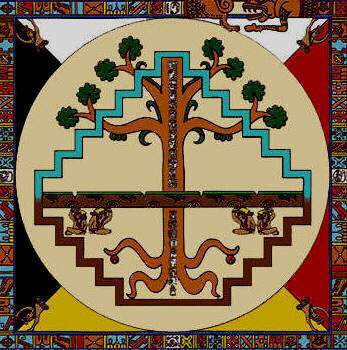
Archaeological evidence from pivotal Maya sites, such as Palenque, Copan, and San Bartolo—the latter containing the earliest known examples dating to the first century BCE—underscores the fundamental role of the Ceiba tree as a central icon in Maya religious art. These archaeological records depict the Ceiba as a colossal botanical entity surmounted by the "Principal Bird Deity," a symbol of celestial sovereignty. Alternatively, the iconography portrays deities emerging from the tree's trunk, a symbolic representation of its function as a conduit for divine manifestation and a primordial source for the emanation of sacred life from the heart of nature.
Maya folk mythology posits that the process of cosmic creation was founded upon the deities planting four symbolic, colored Ceiba trees at the cardinal points: red for the East, black for the West, yellow for the South, and white for the North, established to stabilize the celestial vault. This sacred geometry is completed by the planting of a fifth central Ceiba, serving as the Axis Mundi to unify the three existential planes. Its roots extend into the underworld of Xibalba, its trunk resides within the human realm, and its branches ascend to reach the heavens, thereby facilitating both spiritual and physical connectivity between the stratified layers of the cosmos.
Often times, a Mayan village was constructed around a great Ceiba tree as it offered protection, insight, prosperity and was the enduring symbol of eternal life. To this day, out of respect for its prominence in Maya history and ideology, other trees which surround a Ceiba are harvested for lumber, but forestry workers will allow the magnificent tree which towers over all others, to stand.
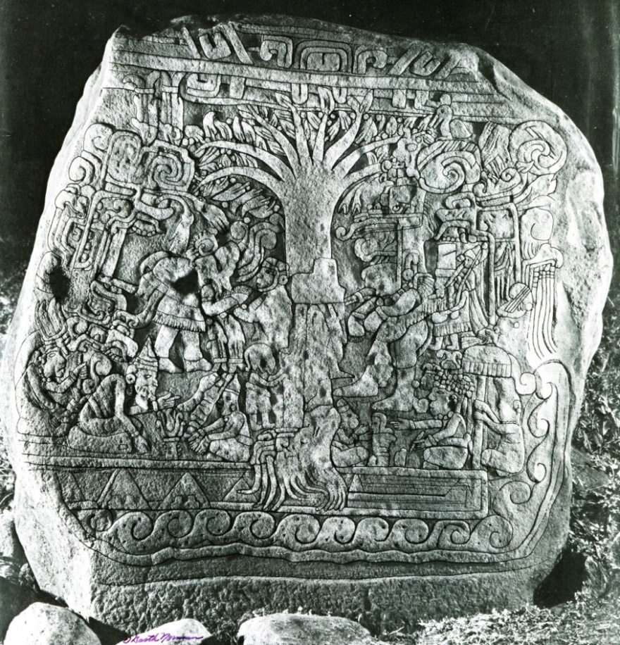
The "Cosmic Tree" (Axis Mundi) in human mythology and history represents a cohesive existential structure, bridging the realms of spirit and matter. It begins with Devonian roots deep within natural history—which reshaped Earth’s chemistry—only to transform in human consciousness into a ritual ladder (as seen in Siberian shamanism) or the Maya Ceiba, which acted as both a spiritual anchor and an economic powerhouse. This tree mirrored the universe: from the "Dragon’s Blood" of Socotra as a witness to human tragedy, to the "Aal Luuk Mas" of the Sakha as a nursery for souls, and finally to the Maya world where the tree was a literal vessel—its massive trunks hollowed into canoes for sea trade, its fibers stuffing mattresses, and its bark and flowers providing medicine and soap. As the trunk represents the mandated human present, its branches remain stations for cognitive ascent. The "withering" of such a tree reveals the fragility of the balance between material resource consumption and spiritual transcendence. Ultimately, the tree remains the eternal bond that transforms "clay" into "consciousness," rendering the human journey a continuous process of refinement between the physical utility of the roots and the majesty of branches reaching toward the Absolute.
According to the thesis presented by scholar Allen J. Christenson in his study, The Sacred Tree of the Ancient Maya (1997), the Ceiba tree represents the most complete visual and symbolic archetype of the "World Tree" concept in ancient Mayan cosmology. This framework is anchored in the tree's morphological structure: its elongated vertical trunk signifies the vertical axis of existence, effectively bridging the three cosmic planes (the heavens, the earth, and the underworld). Meanwhile, its expansive network of branches embodies the four cardinal directions that maintain the equilibrium of cosmic space. Metaphysically, the tree's white flowers acquire a profound ontological significance as symbols of the "White Soul" (sak nik nal), which was believed to descend from higher realms through this axis to incarnate within the human body at birth. Consequently, this tree stands as a vital axis for the process of creation and overall cosmic balance.
Cypress Tree

Ancient Mexico witnessed a singular manifestation of arboreal veneration in the form of an ancient cypress tree, which the indigenous populations utilized as a repository for their spiritual vows and symbolic possessions. Its ramified branches were burdened with votive offerings, locks of hair, teeth, and fragments of ribbon. This tree, having endured for centuries, was likely imbued with occult influences and metaphysical potencies, adorned with sacrifices long before the European discovery of the Americas. This material accumulation upon its branches represents a "living archive" of collective faith, wherein the tree transcends its biological status to become a "monumental shrine" bearing the corporeal and spiritual remnants of its devotees.
Fuchsia Tree
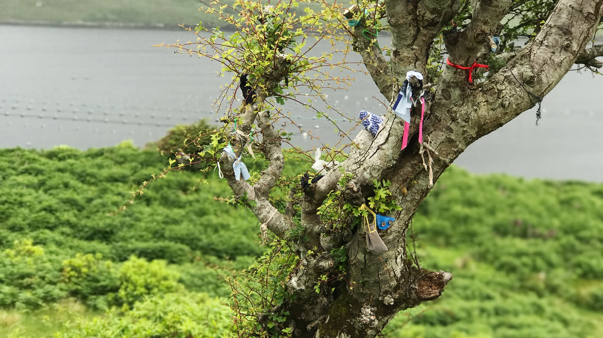
Perched upon the small hills of Northern Patagonia, specifically near the Rio Negro region, the Fuchsia tree (Fuchsia magellanica) stands as a spiritual icon, transcending its botanical nature and crimson pendulous blooms. To the Tehuelche people, this shrub was far from a mere natural element; it was the "abode of a potent spirit" and a metaphysical guardian of the territory. Devotees traveled vast distances to present votive offerings—ranging from tobacco and beads to colored fabrics, bones, feathers, and occasionally small horses. By tethering threads to its branches and depositing gifts at its trunk, the worshiper enters a covenant with nature; it is believed that a "sincere offering" secures absolute protection, physical healing, or success in the arduous pursuit of the hunt.
PACIFIC NORTHWEST COAST(USA)
Thuja plicata
.jpg)
This tree is categorized as a pivotal cultural and metaphysical icon among the Indigenous peoples of the Pacific Northwest Coast of North America, particularly within the cultural frameworks of the Haida, Tlingit, Kwakwaka’wakw, Tsimshian, Coast Salish, and Quileute nations. The high anthropological status of this tree is manifested in the symbolic designations bestowed upon it by the collective consciousness of these tribes, where it is revered as the "Tree of Life," the "Mother of Trees," or the "Long Life Maker." These titles serve as an explicit reference to its existential role in the durability of the community and the continuity of its spiritual and material heritage.
The Red Cedar is classified as the "anthropological cornerstone" of the Indigenous cultures of the Northwest Coast, where the extensive utilization of its timber and bark serves as a fundamental determinant of the geographical and cultural boundaries of these peoples. The metaphysical significance of this tree is manifested in the folk belief in its extraordinary capacity to bestow spiritual strength through direct contact, as well as its pivotal role in traditional medicine for treating a broad spectrum of ailments. In this context, the Kwakwakaʼwakw people designate this tree as the "Tree of Life," in recognition of its profound healing and spiritual properties. The mythologies of the Coast Salish embody this veneration through the narrative of the "Great Spirit," who called forth the Red Cedar to honor a man of boundless altruism; thus, the tree became a continuation of his beneficial existence through its roots used in weaving, its bark in garment making, and its timber in the construction of shelter. This consecrates the tree as a vital pillar for the material and spiritual continuity of the community (Pojar & MacKinnon, 1994).
.jpg)
This tree functioned as the material foundation and the guarantor of self-sufficiency for the Northwest Coast peoples, consecrating it as a symbol of divine providence within their collective consciousness. Its multifaceted utility is manifested in the deployment of its rot-resistant and moisture-proof timber—ideal for perhumid climates—in the construction of "longhouses" and the carving of massive dugout canoes employed for oceanic hunting and regional trade. Furthermore, it held a significant ethnographic role in the creation of totem poles and ceremonial masks. Utilization extended beyond the timber to include the bark, which was processed for weaving textiles, ceremonial garments, and basketry, while the roots and branches were utilized in the production of technical implements and cordage. Clinically and metaphysically, the leaves and wood formed the basis of traditional medicinal practices and were integrated into "smudging" purification rituals alongside sage and tobacco, thereby embodying a holistic unity between technical efficiency and spiritual sanctity.
Every redwood tree has a special spirit. An apology should be offered to the tree before cutting it down, along with a prayer or a gift (tobacco or food). Cutting it down without respect is considered a spiritual insult and may bring bad luck or illness.
Devil's Tower Tree
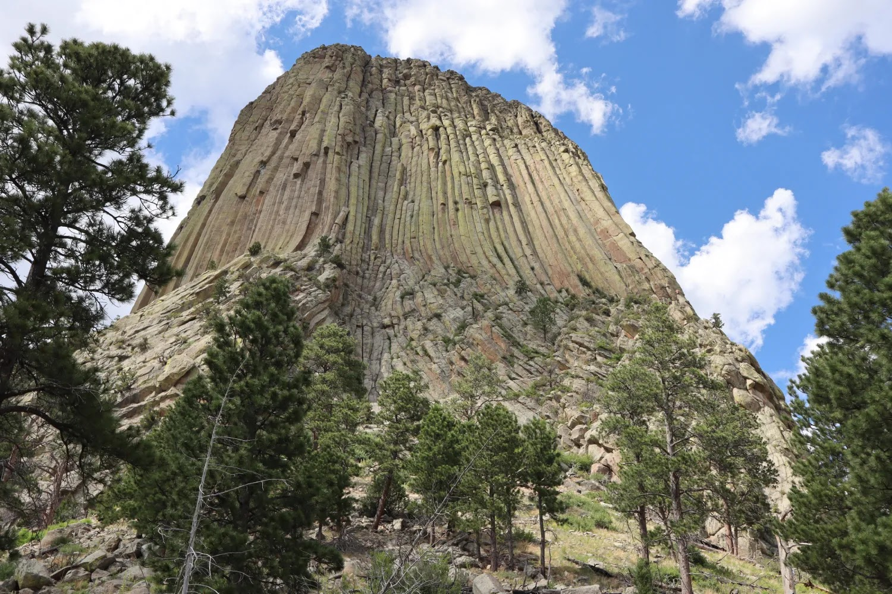
Reports attributed to scientists from the Wyoming State Parks department have circulated, claiming that seismic and photographic measurements conducted beneath "Devils Tower" revealed a geological structure described as a "colossal petrified root system" extending four miles deep and seven miles wide. According to these accounts, the department allegedly issued a statement identifying these formations as massive root-like extensions emanating from the tower's base.
The "mud fossil" theory, proposed by Roger Spoor, suggests that the "Devil's Tower" is the fossilized remains of a giant tree trunk dating back to a primitive era. According to this perspective, many mountain formations and massive rock formations are interpreted as ancient, giant biological entities that underwent extensive fossilization facilitated by specific sedimentary and clayey conditions.
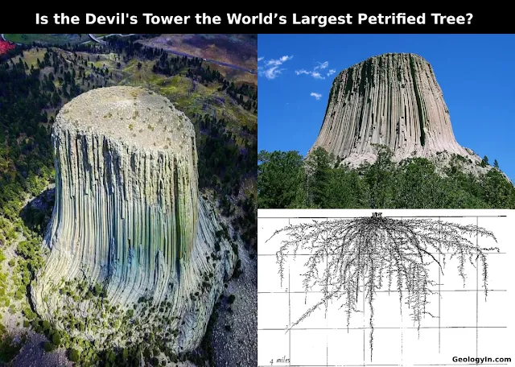
Some contemporary mythological interpretations offer a comparative approach, linking the formation of the "Devil's Tower" to the Norse symbolism of Yggdrasil, the quintessential "world tree" in Norse mythology. This perspective posits that the tower represents the petrified remains of that cosmic tree, which, like all other trees, is believed to have fallen or been cut down.
Certain contemporary perspectives advance the claim that Indigenous peoples, such as the Lakota and Kiowa, possessed an esoteric understanding of "Devils Tower" as the remains of a sacred cosmic tree. According to this assertion, these nations encoded or concealed this existential reality within mythological symbols, most notably the renowned "Bear Myth," which interprets the tower's vertical grooves as claw marks left by a predator attempting to scale its summit.
AMAZON
Wahari-Kuawai
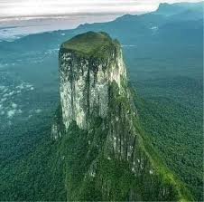
The Wahari-Kuawai tree represents the primordial archetype of the "Tree of Life" within the cosmogonic mythology of the Piaroa people, an Indigenous ethnic group inhabiting the Venezuelan Amazon, specifically in the Amazonas State near the Colombian border. This tree serves as the ontological center from which life emanated in the collective imagination of the Piaroa; its narrative is intrinsically linked to the process of cosmic creation and the establishment of the natural and social order within the region.
The Guyana Shield in Venezuela serves as the geographical and ontological domain of "Piaroa Iuwabi," the "Tree of Life" that represents the primordial source of humanity and the sacred mountain that sustains all living beings. According to the mythological frameworks of the Piaroa people, this towering mountain is the remnant of "Kuaimayojo"—the trunk of the "Sacred Tree of Universal Fruits"—whose zenith reached the heavens and whose laden branches bestowed primordial fertility upon the Amazon region.
The myth narrates a transformative cosmic event in which the deity "Wahari," prompted by his nephew "Ruaye" (manifested as an agouti), felled the tree to seize its abundance. The resulting collapse radically reshaped the regional geography: the northern branches formed the forests of the "Cuao River," while the western branches became the mountain ranges of "Sipapo" and "Waitchig." This cataclysmic event further altered hydrological courses and initiated the formation of alpine lakes. Furthermore, the genesis of the renowned "Autana" caves is attributed to the frantic attempts of a trapped "Payara" fish to escape by striking the sacred trunk, thereby consecrating the tree as the primordial origin of both the physical topography and the ecological order of the region.
The cataclysmic collapse of the "Sacred Tree" serves as the foundational event for the contemporary topography and biosphere of the Amazon in Piaroan ontology; modern geographical features are interpreted as direct manifestations of this cosmic dissolution. The remaining trunk was transformed into Mount Autana (Cerro Autana), which persists in the landscape as a visual testament in the form of a colossal truncated stump. Simultaneously, the falling branches redrew the forest and mountain boundaries, creating the Cuao River forests to the north and the Sipapo and Waichij ranges to the west. Biologically, the current botanical diversity and agricultural crops of the Amazon are attributed to the fruits scattered at the moment of impact, which evolved into the myriad plant species recognized today. Thus, the disappearance of the primordial tree represents the transition from a unified existential source to a pluralistic and complex ecosystem (forests, rivers, mountains), signaling the final formation of the world as it is presently known.
Mount or Tree Roraima
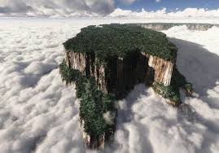
Mount Roraima represents one of the most singular geological formations on Earth, emerging as a towering massif amidst the tropical rainforests at the tri-border intersection of Venezuela, Brazil, and Guyana. Categorized as a "Tepui"—a flat-topped table mountain—it reaches an elevation of approximately 2,810 meters (9,219 feet) above sea level. Its morphological structure is characterized by sheer vertical cliffs plunging over 400 meters (1,300 feet) into the surrounding forest biome. This extraordinary formation, with its expansive plateaus and cloud-shrouded summits, has commanded a significant presence within local mythology and folk traditions. Furthermore, its primordial aesthetic, evocative of prehistoric eras, has served as a profound catalyst for inspiration in contemporary global literature.
Mount Roraima serves as a pivotal ontological and sacred icon within the mythological culture of the Pemon people, inhabiting the Gran Sabana region spanning Venezuela, Brazil, and Guyana. According to the cosmogonic perceptions of these Indigenous groups, Roraima is not merely classified as a geological formation; rather, it is revered as the remaining stump of the primordial "Tree of Life" felled during the era of initial creation. This mythological narrative posits that the current mountain represents the petrified base of a colossal cosmic tree that once bore all varieties of fruits and crops. Its collapse reshaped the surrounding topographical features, consecrating the mountain as a physical testament to the transformative moment between primordial botanical unity and contemporary biological diversity.
The myth of the "Colossal Tree" atop Mount Roraima stands as one of the most prominent cosmogonic narratives in Indigenous mythology; this tree is classified as the primordial source of all fruits and agricultural produce in the world. The mythological account posits that the felling of this tree triggered a cataclysmic deluge that reshaped the earth's features, while its remaining stump solidified into the towering massif known today as the mountain. Structurally, this narrative intersects with universal "Flood Myths" found across diverse global cultures, reflecting a unified human imagination in interpreting major cosmic transitions and the shift from a state of absolute primordial abundance to the current ecological order.

This myth serves as an extension of the narrative of Makunaima and his brothers, centering on their discovery of the magical Wazaca tree in the heart of the forest—a cosmic entity whose branches bore the primordial origins of all the world's fruits and crops. This account holds profound ontological significance, as it elucidates the causes of the "Great Flood," the origin of aquatic life, and the topographical genesis of Mount Roraima. This material was documented by researcher Maria Manuela de Cora in her work Kwai Mare: Indigenous Myths of Venezuela (1957), based on ethnographic data originally collected by the German ethnologist Theodor Koch-Grünberg during his expedition to Pemon villages near Roraima between 1911 and 1912. The mythological climax begins when Ma'nabi proposed felling the tree shortly after its fruits were first consumed, triggering a series of major cosmic transformations.
The mythological confrontation between Ma'nabi and Akuli (the Agouti) embodies an ontological conflict between the impulse for material acquisition and the ecological wisdom that warns against the disruption of cosmic equilibrium. According to the narrative, Ma'nabi’s decision to fell the Wazaca tree represented a rebellion against the permanence of abundance. He employed a series of linguistic incantations—invoking the physical properties of soft-wooded trees such as the Mazaba and Papaya—to weaken the structural integrity of the "Tree of Life." Conversely, the conservative forces, represented by Akuli and Anzikilan, attempted to repair the cosmic fissures by summoning the petrous density of the Yuturima falls; however, the destructive will ultimately prevailed, resulting in the tree’s collapse.
This cataclysmic felling resulted in a radical restructuring of the physical geography. The remaining trunk and root system were transformed into the iconic massif of Mount Roraima, while the surrounding mountains emerged from the debris of the impact. Biogeographically, the myth elucidates the contemporary distribution of resources: the fruit-laden canopy settled on the northern flank, rendering its bounty the domain of spirits and inaccessible to the human populations of the south. This cosmic drama culminated in the "Great Flood" and the emergence of aquatic life from the severed trunk, thereby enshrining the tree as the primordial origin of topography, climate, and biodiversity, and marking the transition into a human epoch defined by scarcity following the disappearance of the source of absolute abundance.
Maniri
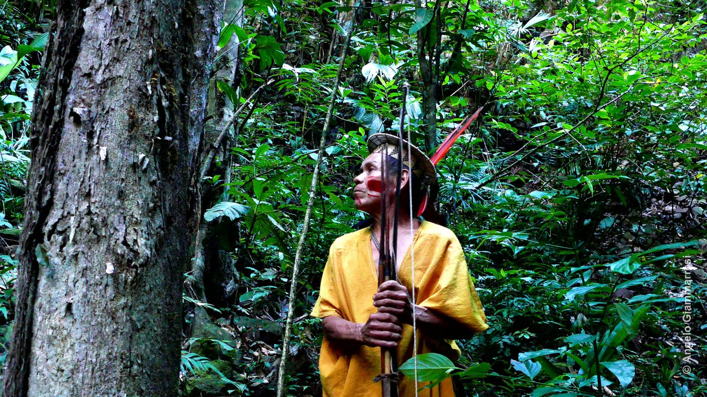
The forest space appears in the Asháninka community as a sacred space for contemplation and protection. The tree is known as "Maniri", and it is not just a tree, but rather a "true spiritual personality" and a living entity possessing human consciousness and feeling. Access to this sanctuary was only available to their ancestors, healers and shamans, such as Chiribiary, Tabaceros, and Ayahuasqueros, who had the ability to converse with Maniri and extract medicines from him in a relationship similar to contemporary medical consultation. This cosmic vision denies the tree its purely material character, elevating it to the level of a personal being who sees and feels, making the forest an integrated whole of wisdom and spiritual medicine.
The concept of the "sacred place" within the Asháninka community manifests as a space imbued with consciousness, where nature possesses a supreme faculty to discern and monitor human intentions. The sanctity of Maniri is not merely that of a shrine, but of a defensive entity imposing a "spiritual inviolability" that bars the unauthorized from approaching. Upon the intrusion of the uninitiated, the forest transforms into a zone of cosmic turbulence; darkness descends, and tempestuous winds and thunderstorms erupt as a deterrent perimeter. At the zenith of this manifestation, the arboreal entity dissolves into an enigmatic mist, while the terrifying roar of the Jaguar echoes as the sovereign voice of the locus. This establishes Maniri as a vital force capable of metamorphosis, fiercely guarding its spiritual purity against any illicit transgression.
PERSIANS
Gaokerena
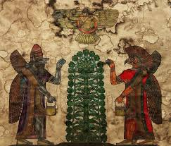
The Gaukrina tree is a central mythological symbol in Zoroastrianism and ancient Persian mythology, often described as the giant white Haoma plant growing in the Vourukasha Sea, the cosmic ocean. It is considered the source of healing, immortality, and regeneration, and contains the seeds of all plants on Earth.
Gaokerena or White Haoma is a tree in Persian mythology whose vivacity ensures continued life in the universe, and grants immortality to "all who eat from it". The bird Simurgh perches atop a tree located in the center of the heavenly sea Vourukasa. In the Pahlavi Bundahishn, it is said that evil god Ahriman created a giant marine reptile, either described as a lizard, turtle or frog, to destroy the sacred tree. The tree was protected by the ten Kara fish created by Ahura Mazda, the god of light.
In his renowned work Spiritual Body and Celestial Earth (1977), the French philosopher and Orientalist Henry Corbin provides a profound symbolic description of this tree as an embodiment of the "Celestial Earth" in Mazdean (Zoroastrian) thought, serving as the essential source of spirituality and eternal life within the angelic realm; Corbin links this tree to the "Améshā Spenta" (the Holy Immortals), specifically "Ameretat", the divinity presiding over vegetation and immortality, emphasizing that this tree is not merely a material element but a cosmic icon reflecting the connection between the earthly and celestial planes, bestowing a sense of sanctity and permanence upon existence.
In ancient Persian traditions, the Haoma plant was far more than a ritual substance; it was a cornerstone of daily spiritual life. Its juice was extracted using a pestle and mortar whenever prayers were offered. Every Persian household maintained its own haoma plant and sacred implements, which were guarded against pollution as rigorously as the "Holy Fire" and the consecrated myrtle twigs.
The preparation of the haoma drink was governed by a specific and stringent liturgy. During the act of dedication, the cup had to be held aloft rather than placed on the ground, a precaution taken to prevent it from being defiled by the breath of the worshipper or any other terrestrial impurity. This practice reflects a profound veneration of the plant as a bridge between human piety and divine purity, where maintaining the pristine nature of the haoma was essential for the efficacy of prayer.
Cyprus Tree
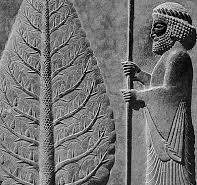
The cypress tree holds enormous cultural and symbolic importance in Iranian art and culture as a whole. Known as 'sarv' in the Persian language, it's been revered for centuries and appears in various forms of art, literature, and architecture across Iran and other Iranic and Persianate regions from India to Transoxiana, to the Caucasus, and even to the Turko-Persian Seljuk and Ottoman realms.
The Cypress tree held a distinguished ontological status among the ancient Persians, venerated as a sacred entity intrinsically linked to "fire worship" and the pure luminous essence of the deity Ormuzd. As a symbol of purity and immortality, its visual presence was prominently featured in funerary arts, where it was frequently depicted on ancient tombstones alongside the Lion—the personification of the sun god Mithra. This symbolic pairing of the cypress and the lion represents a union between eternal verdure and solar sovereignty, reflecting a Persian cosmology that sanctifies natural elements as emanations of divine light.
Some historical studies suggest that the Cypress tree is the original source of the Christmas tree tradition, stemming from the influence of Mithraism which spread throughout the Roman Empire during the 3rd century CE; the Cypress was a sacred symbol in this Persian-origin religion associated with sun worship, and Romans celebrated the birth of "Mithras" in late December by decorating evergreen trees. With the rise of Christianity and its adoption by the Empire, these ritualistic symbols were gradually assimilated into Christmas celebrations, rendering the Cypress the ancient historical link that later evolved into the fir or pine trees used globally today.
Plane Tree (Chenar)
.jpg)
The Achaemenid monarchs adopted the plane tree as their distinctive sovereign emblem, to the extent that its representations, crafted in pure gold, became an integral part of the royal regalia and state symbolism. The sanctity of this tree is vividly illustrated in the ritualistic conduct of Xerxes, who bestowed upon a specific plane tree in Lydia offerings of golden vessels and luxurious garments. Furthermore, in an extraordinary act of veneration, he entrusted its protection to one of his elite "Immortals," thereby transforming the tree from a natural entity into a political and spiritual surrogate embodying the king's blessing and the continuity of his throne.
CANAANITES
Asherah (Oak Tree)
.jpg)
Arboreal symbolism in Canaanite thought reaches its zenith in the figure of the goddess Asherah, who represents the feminine aspect of divinity and cosmic fertility. In the ancient texts of Ugarit, she appears as Athirat, the consort of the supreme god "El" and the mother of seventy deities. Asherah was not merely a goddess who presided over nature; she was nature itself in its vitality and regeneration. Consequently, her primary symbol was the "Tree of Life" or what is known as the "Asherah Pole."
This wooden pole, often erected beside altars, served as a visual surrogate and a living embodiment of the goddess's presence. Its timber, drawn from the earth, symbolized fertility, while its ascending reach symbolized the sustenance of life. In this sense, Asherah is not simply a deity inhabiting the forest.
Archaeological discoveries, most notably the famous Lachish Ewer, provide decisive visual evidence of the identification between the goddess Asherah and arboreal symbolism. In these inscriptions, the tree does not appear as a mere decorative element, but as a central sacred entity flanked by animals (typically ibexes or stags) in a symmetrical pose of veneration. This imagery depicts the tree as the "Source of Life," where creatures find sustenance from its overflowing bounty, reflecting Asherah’s role as the nourishing mother of the entire cosmos.
Scholars suggest that depicting the tree flanked by animals constitutes a "visual language" that predates or supplements text, affirming that the goddess's body is the axis around which nature is organized. The tree here is "Asherah" in a state of epiphany, and the surrounding animals symbolize the vital forces that derive their permanence from their divine botanical origin. This Canaanite art encapsulates a profound philosophy that views trees as physical conduits through which the divine spirit flows to sustain the terrestrial world.
Dabura Tree (Oak Tree)
The Tree of Daborah stands at the foot of the sacred Mount Tabor in the village of Dabburiya, serving as a living witness to the resilience of Palestinian memory and its profound connection to the land. This ancient Oak or Terebinth, estimated to be nearly a millennium old, is far more than a botanical specimen; it is a "spiritual lung" for the people of Galilee. Locally revered as the "Tree of the Waly" (the Saint’s Tree), it is enveloped in an aura of sanctity that seamlessly blends mythological history with popular veneration.
.jpg)
The Tree of Deborah derives much of its majesty from profound prophetic memory; historical and biblical traditions identify it as the designated seat of Deborah, the Prophetess and Judge. According to the Book of Judges, Deborah did not preside from within palaces or fortifications; rather, her sanctuary was nature itself. She sat beneath her renowned palm or oak between Ramah and Bethel, where people sought her for judgment and justice.
The sanctity of this tree transcends ancient texts, merging into the crucible of Islamic folk heritage. Local consciousness draws a profound spiritual link between its perennial verdancy and the figure of "The Righteous Saint" or "Al-Khidr" (peace be upon him)—the symbol of renewed life and esoteric knowledge. In the eyes of the local populace, it is not merely a tree but a "botanical shrine" infused with Baraka (blessing), serving as a sanctuary for those in need. They frequent the site seeking healing, the blessing of progeny, or the facilitation of marriage.
This relationship is vividly expressed through "rituals of connection" performed by visitors; they fasten colored ribbons or strips of cloth, known as manasik, to its branches. These act as silent prayers suspended in the breeze—symbolic offerings linking human petition to the sanctity of the site. Such scenes, where the colors of the fabric blend with the rustling leaves, reproduce the primordial concept of the tree as a "mediator" between Earth and Heaven, where every bough carries a wish and every leaf bears witness to a prayer.
The "Daborah Tree" is enveloped in an aura of awe and reverence, as popular belief holds that the tree protects itself; anyone who dares to cut a branch or cause it harm is said to be stricken by misfortune or illness. This perceived sanctity made it, in the past, the ideal location for tribal reconciliations, as an oath taken beneath its shade was considered a sacred covenant that could not be broken. Some narratives describe it as an "immortal" tree whose greenery never fades, possessing the secret to healing diseases. Its current significance lies in its role as a symbol of steadfastness (Sumud) and rootedness in the land, serving as a spiritual and historical landmark that links the various eras and principles that have passed through the region, making it an ecological treasure that carries a living, inextinguishable memory.
Beka'im (Mulberry Tree/Balsam Tree)
The "Beka'im" trees appear in biblical text as instruments of sensory revelation and military action, linked to a strategic encounter between King David and the Philistines. These trees are commonly translated as Mulberry or Balsam trees; however, their mythological essence lies in their treetops becoming a "platform" for a divine signal. This signal was not merely a passing breeze but a "sound of marching" heard at the tops of the trees, as if the arboreal canopy had become a bridge for celestial hosts preceding the earthly army.
...So if you hear a knocking sound in the tops of the mulberry trees, go out...
Scholars interpret the selection of these specific trees—characterized by leaves highly sensitive to movement—as an embodiment of the tree as a "receiver of supernatural frequencies." Here, a natural phenomenon (the rustling wind) is transformed into a coded message requiring profound spiritual listening. It marks the moment when nature speaks to announce a shift in the destinies of nations.
EGYPTE
Sycamore Fig
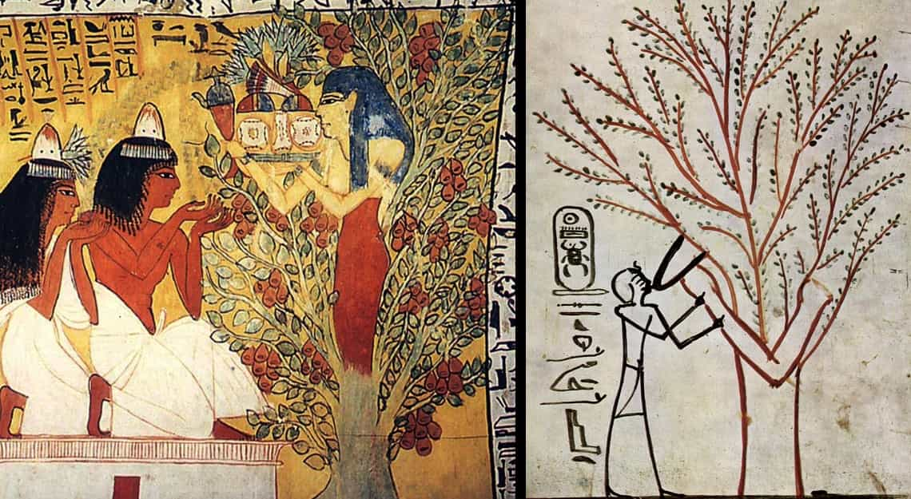
The Sycamore Fig (Ficus sycomorus) in ancient Egyptian belief served as the spiritual lung of the Nile Valley. It was not merely a source of shade and food in the arid climate but was the "botanical embodiment of divine motherhood." Known by the famous title "Lady of the Sycamore," this tree was primarily associated with the goddess Hathor, and later with Nut and Isis, as a dual provider of life in this world and the next. Sociologically and mythologically, the Sycamore was viewed as a gateway between the realm of the living and the Duat (the underworld). In Egyptian reliefs, the goddess is often depicted emerging from the tree trunk to offer the deceased the "water of life" or "sacred milk," symbolizing eternal nurturing and spiritual ascension. This spiritual bond extended to funerary rites, where coffins were crafted from Sycamore wood to serve as a "wooden womb," returning the deceased to the embrace of the Mother Goddess to ensure rebirth and immortality in the celestial fields. This rendered the tree an eternal symbol of healing, protection, and resilience against oblivion.
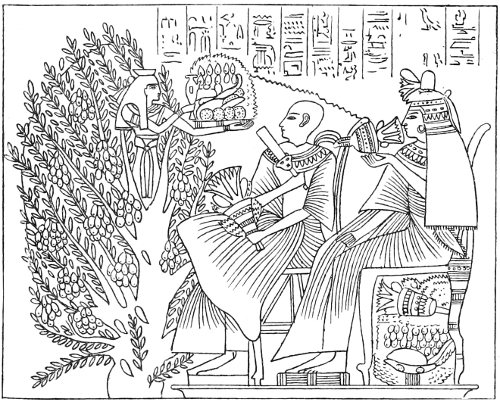
In ancient Egyptian mythology, sycamore trees were not merely botanical entities but "living temples" inhabited by major deities such as Hathor, Nut, Selket, and Neith. This belief is vividly articulated in the Book of the Dead, where the tree is depicted as a pivotal station of deliverance on the edge of the arid desert through which the soul journeys toward the afterlife. There, the tree-goddess emerges to bestow bread, water, or fruit upon the traveler; by accepting these gifts, the soul becomes a "divine guest," a status that precludes its retreat or return without explicit permission.
The artistic renderings of this divine indwelling vary; while some illustrations show the goddess’s bust emerging from the dense foliage, others depict only a "divine arm" reaching out from the verdant heart of the tree, clutching a sacrificial vessel. This symbolism reaches its ontological zenith in funerary artifacts, such as an ancient sarcophagus in the Marseille Museum, where the tree trunk is conflated with the goddess's body—the branches becoming limbs and the bark a sacred epidermis—in a complete personification of the union between nature and divinity.
They were habitually honoured with fruit offerings, and the charitable found an outlet for their benevolence in daily replenishing the water-jars placed beneath them for the use of the passer-by, who in his turn would express his gratitude for the boon by reciting a prayer to the deity of the tree.
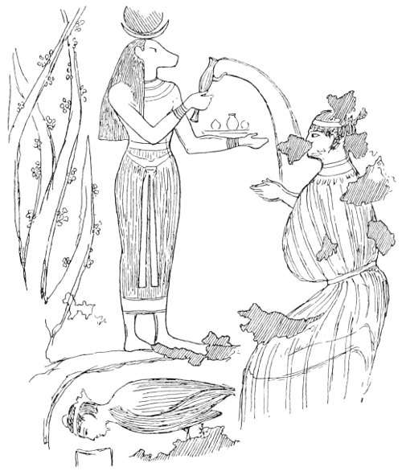
The most famous of these sycamores—the sycamore of the South—was regarded as the living body of Hāthor upon earth; and the tree at Metairieh, commonly called the Tree of the Virgin, is probably the successor of a sacred tree of Heliopolis, in which a goddess, perhaps Hāthor, was worshipped.
The district around Memphis was known as the Land of the Sycamore, and contained several trees generally believed to be inhabited by detached doubles of Nu̔ît and Hāthor
A popular legend tells that during the Holy Family's journey from Palestine to Egypt, Mary rested under an ancient sycamore tree. The tree bent down to shade her, and thus became blessed. A tree (or its descendants) still exists today and is associated with miracles and blessings.
Ished Tree

The Ished Tree in ancient Egyptian belief represents the "Cosmic Register" and the Solar Tree of Life, primarily associated with Heliopolis (City of the Sun) as the epicenter of cosmic order (Maat). Unlike the Sycamore, which focused on maternal nurturing, the Ished was the tree of Sovereignty and Political-Spiritual Immortality. The god Thoth (God of Wisdom) and the goddess Seshat (Mistress of Writing) were depicted inscribing the names of kings and their years of reign upon its eternal leaves, granting the monarch a divine legitimacy that stretched into eternity. Sociologically and mythologically, this tree served as the stage for the ontological struggle between order and chaos; beneath its branches, the "Cat of Heliopolis" (an aspect of Ra) is shown slaying the serpent Apophis to prevent the destruction of the Tree of Life and the cessation of time. As the dwelling place of the Bennu bird (the Egyptian Phoenix), the Ished tree symbolizes the daily rebirth of the sun and the resurrection of the soul, making its leaves and fruits a divine "roadmap" ensuring the continuity of light and the defeat of darkness in the ancient Egyptian consciousness.
Osiris
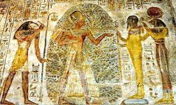
Historical evidence from ancient Egypt suggests that the great deity Osiris originally functioned as an arboreal god. According to Egyptian mythology, following his assassination, his sarcophagus was discovered encased within the trunk of a tree. This botanical identity is corroborated by inscriptions designating him as "the one in the tree" and "the solitary one in the acacia." Furthermore, the annual rites celebrating his demise and interment appear structurally coupled with the ritualistic frameworks of Tammuz, Adonis, Attis, and Dionysus—deities whose veneration was intrinsically linked to vegetation cycles and arboreal symbolism, positioning Osiris as a universal icon of regeneration emerging from the essence of nature.
Others
The concept of the "World Tree" is vividly manifested in Egyptian mythology through two opposing images representing the solar journey and the soul's destiny. In the West, along the Path of the Dead, stands the jewel-encrusted Golden Tree of Heaven—the sacred abode of the goddess Nut. As the deity of the celestial ocean whose body is adorned with stars, Nut leans from the branches to pour the Water of Life for the pilgrim journeying to the Underworld, while the deceased partake of her fruit to sustain their spirits.
To the East, another tree stands with sprawling, gem-laden branches, serving as the ladder by which Horus, the mighty morning sun, ascends to the zenith of the heavens. Scholars suggest that this mythical "Emerald Tree" was a metaphorical personification of the vibrant green hues that grace the horizon during sunrise and sunset. This duality between the Golden Tree of the West and the Emerald Tree of the East reflects the cycle of life, death, and rebirth, positioning the tree as the eternal bridge between the earthly realm and the kingdom of heaven.
GREEK
The Olive Tree
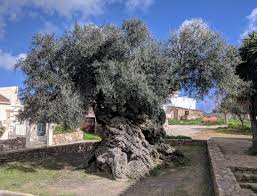
The Olive Tree in Greek mythology serves as the backbone of Athens' political and spiritual identity. The victory of Athena's gift over Poseidon's saltwater spring represents an intellectual shift from the logic of "raw power and naval dominance" to the logic of "wisdom and sustainability." Sociologically and economically, the tree was not merely a symbol but a civilizational engine; from its oil, Athenians lit their lamps and nourished their bodies, and from its wood, they built their homes, making it the city's most precious strategic asset. The sacred olive tree at the Erechtheion on the Acropolis holds special sanctity due to its legendary regenerative power; it was said to have sprouted anew immediately after the Persians burned the city, transforming it into a symbol of "rebirth and immortality" and the enduring resilience of the Athenian state.
The goddess Athena maintains an organic bond with the olive tree, an association that scholars suggest predates the myth of her emergence from Zeus's brow; her true origin likely traces back to a wild olive tree that grew atop the Athenian Acropolis. The sanctity of the olive was so inextricably linked to Athenian identity that its fruit acquired a quasi-religious status, forming the material bedrock of Greek civilization. From the Age of Pericles onward, Athenian coinage featured the olive branch alongside the tutelary goddess's traditional emblems, and every olive tree within her sanctuaries served as a metaphysical symbol of peace and divine providence.
.jpg)
This relationship culminated in one of the few genuine creation myths in Greek folklore: the contest between Athena and Poseidon over the naming of the city. While Poseidon offered the "horse" as a symbol of power and war, Athena revealed the "gray-green" olive branch as an emblem of prosperity and peace. By the decree of the divine assembly, the olive was judged the superior gift to humanity, establishing Athena as the patron of the city that would bear her name. This mythical juncture, signifying the triumph of wisdom over force, remained a preferred theme in classical art and late Attic numismatics, serving as an eternal proclamation of the sovereignty of peace beneath the sanctuary of the olive grove.
The olive tree standing today next to the Erechtheion on the Acropolis is a physical embodiment of the concept of "Rebirth and Immortality" in the Greek consciousness; it is treated not as an ordinary tree, but as the "legitimate heir" and direct descendant of the tree planted by the goddess Athena millennia ago. Sociologically and historically, this tree gained its timeless sanctity from its incredible capacity for regeneration. According to the historian Herodotus, when the Persians burned the Acropolis in the 5th century BCE, a new shoot sprouted from the charred stump the very next day, which the Greeks interpreted as a divine sign of their state's resilience. Over 2,500 years of wars, occupations, and cultural shifts, this tree (or its renewed offspring) has remained a symbol of eternal steadfastness, viewed today as a global icon linking ancient myths with contemporary environmental reality—a witness to the continuity of human civilization and its adherence to its sacred roots.
Callimachus’s Hymn to Delos highlights the moment of "cosmic transformation" during the birth of the god Apollo, where nature shifted from its organic matter into "pure gold," the color associated with divine light and the sun. Sociologically and mythologically, the "original olive tree" in Delos was not merely a botanical symbol but a witness to the supreme event that rendered the island a sacred center; the emergence of the golden branch was a sign of divine favor granting the land eternal value. Regarding the peculiar ritual mentioned by Mair in the scholia—"biting the olive branch with hands bound behind the back"—it reflects a type of "penitential ritual" or violent "spiritual ordeal." Binding the hands strips the individual of human power, placing them in a state of "absolute submission" before Apollo's majesty, while biting directly with the mouth achieves an intimate and direct physical connection with the tree's sanctity. This act symbolizes humility and the stripping of one's ego before divine power, transforming the tree from a source of oil and shade into a "spiritual sanctuary" that requires extraordinary physical effort from the believer to attain its blessing.
Oak Tree
In ancient Greek religion, the sacred oak at the Oracle of Dodona was considered a symbol of divine wisdom and communication with the gods. Priests and priestesses interpreted Zeus’s messages from the rustling of the leaves and the movement of the branches. The tree served as a link between heaven and earth, reflecting the symbolic significance of the Tree of Life
The myth of the "Cosmic Oak" in the philosophy of Pherecydes of Syros (one of Pythagoras' teachers) is one of the oldest Greek attempts to formulate a "World Tree" concept, similar to Celtic and Norse traditions. Through the marriage of Zas (Zeus) and Chthonie (Earth), this great tree sprouts to serve as a "Cosmic Pillar" linking the extremities of existence; its branches stretch to embrace the heavens, while its deep roots plunge down to reach Tartarus in the depths of the underworld. Sociologically and mythologically, this concept represents a transition from "anthropomorphic gods" to "cosmic symbols"; the tree here is not merely a plant, but the vessel carrying the cosmic robe adorned with stars and geography, rendering the Oak a living entity that ensures the stability and balance of the cosmic fabric between the realms of the living, the dead, and the gods.
Herodotus’s account of the Dodona oracle provides one of the most profound images of "botanical sanctity" in the Greek world, where the Oak tree was not merely a geographical landmark but a "speaking tongue" for divine revelation. Sociologically and mythologically, the choice of the black dove from Egyptian "Thebes" to alight upon the oak branches represents a unique fusion of ancient Eastern wisdom and the primal nature of Greece; through this "human speech," the tree was transformed from a silent entity into a spiritual medium (Oracle) embodying the will of Zeus. The faith of the people of Dodona in this message and their establishment of the temple around the tree reflects the concept of "eco-centrism" in ancient religion, where the forest is the primary temple and the rustling of oak leaves is the sacred language that priestesses must decode to guide humanity. This rendered the "Oak of Dodona" the oldest and most sacred oracle in Greek history, and a witness to the unity of revelation across great civilizations.
Pausanias’s account provides a unique ritualistic dimension to the Oak tree in the Arcadia region, where it transitions from being a "medium of knowledge" (as in Dodona) to a "tool for climate control" and a magical force for invoking rain. Sociologically and mythologically, the oak branch in the hand of the priest of "Zeus Lykaios" represents a conductor's baton orchestrating the elements of nature; as soon as it touches the surface of the spring on Mount Lykaion, the water transforms from liquid to mist, then into rain clouds. This ritual reflects the concept of "sympathetic magic" in ancient Greek beliefs, where the Oak is viewed as a tree inherently linked to the gods of the sky and thunder, granting its branches spiritual authority over the atmosphere. This practice emphasizes the vital role of trees in ancient agrarian and ecological societies, where they were not merely living organisms but "cosmic keys" used by priests to rescue the land from drought and restore balance between the heavens and the Arcadian soil.
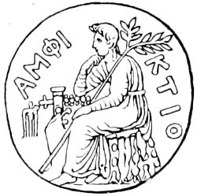
Artistic media and numismatics frequently immortalized this sanctity, depicting the deity crowned with oak leaves or stationed beside its formidable trunk. This veneration transcended mere aesthetics, embedding itself in the vernacular; "consuming the acorns of Zeus" became a metaphorical idiom for the attainment of profound wisdom and enlightenment. This specialized sanctity of the oak—as the tree of the Father of Gods—subsequently transitioned into Italy, a sacred bond eloquently articulated by the poet Virgil.
The sanctity of the Oaks of Dodona manifests in classical mythology as an indestructible vital force; prophecy was not merely a transient quality of living branches but an "immanent essence" that endured even in its severed timber. The story of Aeacus highlights this connection: standing beneath a sacred oak grown from a seed of ancient Dodona, he implored Zeus to repopulate his plague-stricken kingdom. The response came not in a human voice, but through the rustling of leaves and the swaying of boughs—an omen Aeacus kissed in reverence, leading to the miraculous transformation of ants into the legendary Myrmidons.
This extraordinary power extended far beyond the standing tree. In the epic of the Argonauts, the goddess Athena fashioned the ship's keel from the wood of the Dodona grove. This piece of "dead" timber retained its prophetic spirit, speaking and offering counsel to the heroes throughout their arduous voyage. This confirms that the wood of Dodona was not merely construction material, but a "guiding intellect" and a vocal medium linking humanity to the divine will, even amidst the open sea.
Laurel Tree
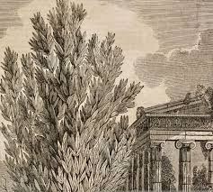
The laurel was sacred to Apollo. No temple to him was complete without it; and no temple could be built on land unsuitable for its growth. No worshipper could participate in his rituals unless he wore a laurel wreath or carried a laurel branch. As a symbol of the god's power—he was simultaneously prophet, poet, savior, and protector of his people—the laurel played a significant and multifaceted role in ceremonial symbolism.
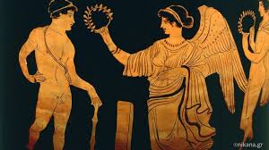
The branches of the Laurel transcended their role as mere botanical ornaments to become potent metaphysical instruments. In the hands of the rhapsodist, the "laurel staff" was the key that invoked divine inspiration, while in the hands of the prophet or seer, it became the medium for unveiling hidden truths and peering into the occult. Consequently, the use of laurel played a fundamental role in the oracular rituals at Delphi, as the belief prevailed that bearing a laurel branch was the surest path to securing divine protection and favor.
The laurel also became sacred to Asclepius. As a source of both valuable medicine and deadly poison, it was highly valued by Greek physicians. It was widely believed to ward off evil spirits, and it was customary to place a laurel branch above the entrance in cases of serious illness to prevent death and keep evil spirits at bay.
The myth of Apollo and Daphne provides a quintessential model for "metamorphic myths"—narratives devised to explain primordial associations whose original meanings have faded over time. Historical evidence confirms that the Laurel was consecrated to the Earth goddess Gaia long before the ascension of Apollo; the sacred laurel first sprouted at the Delphic chasm when the Earth remained the primary source of oracular power, with Daphne—a mountain nymph and daughter of Gaia—serving as the presiding priestess.
The tale of Daphne’s transformation reflects a deeper struggle for "spiritual hegemony." As she fled Apollo’s pursuit, she implored her mother (the Earth) for salvation, who subsequently consumed her, leaving a laurel tree in her stead. With his declaration, "If thou canst not be my wife, thou shalt at least be my tree," Apollo appropriated both the site and its symbolism, transitioning the laurel from an entity of Gaia into a "crown" for his lyre and the source of his oracles. Thus, the metamorphosis was not merely a romantic evasion but a process of "religious displacement," where the ancient chthonic worship of the Earth was supplanted by the Olympian laws of Zeus, articulated through his medium, Apollo.
.jpg)
The spiritual dominion of the Laurel migrated from Greek shores into the heart of the Roman Empire, permeating the most intricate facets of both religious and military life. In Rome, whenever the Sibylline Books were consulted for divine guidance, the oracular laurel wreath invariably adorned the priest’s chair, serving as an indispensable element for metaphysical communion.
This concept proved remarkably resilient; as late as 200 AD, Clement of Alexandria felt compelled to warn the faithful against the remnants of this creed, asserting that "one should not hope for reconciliation with God through laurel branches adorned with red and white ribbons." This admonition serves as a testament to how deeply "laurel magic" was embedded in the collective consciousness, persisting as a rival to emerging religious dogmas in the quest for divine mediation.
.jpg)
The Daphnephoria festival in Thebes represents the pinnacle of rituals intertwining human existence with botanical sanctity; it was celebrated every nine years in honor of Apollo. Presiding over this grand procession was the "Daphnephoros" (Laurel-bearer), a youth meticulously selected for his physical prowess and beauty to serve as the "pro-tem priest" and the ceremonial icon. Following him to the deity’s temple was a choir of maidens, also bearing laurel branches and chanting hymns that imbued the atmosphere with sanctity.
The profound symbolism of this festival lies in the identification of the "bearer" with the deity himself; Apollo was also epitomised as Daphnephoros, for it was he who originally brought the laurel to Delphi and planted it within its sacred soil. This rite is not merely a religious parade but a mythological reenactment of the foundational act, where the boundaries between the God (the original laurel-bringer) and the Youth (the contemporary laurel-bearer) dissolve, leaving the tree as the spiritual thread connecting human action to divine origin.
Myrtle Tree
.jpg)
The Myrtle tree reigned supreme within the botanical sanctuary of Aphrodite, as it was firmly believed to possess the metaphysical power to kindle and sustain love; hence its ancient role in nuptial ceremonies since time immemorial. In the Eleusinian Mysteries, initiates adorned themselves with a synthesis of Zeus’s oak and Aphrodite’s myrtle. The goddess’s retinue of nymphs were likewise depicted in myrtle wreaths, and her devotees crowned themselves with its boughs as a testament of devotion. In Rome, Venus was venerated under the epithet "Myrtia" at her temple situated at the foot of the Aventine Hill.
Golden Apple Tree

The Golden Apple Tree in the Garden of the Hesperides represents the pinnacle of mythological symbolism for the "Fruits of Immortality" in ancient Greek thought; it was not merely a plant, but the ultimate wedding gift from "Gaia" (Mother Earth) to "Hera" upon her marriage to Zeus. Sociologically and mythologically, this tree is situated at the farthest western edge of the world, where the sky meets the earth, making it a symbol of the ultimate boundaries of human existence and the sanctuary where divine secrets are kept. Because its fruits grant "eternal youth and immortality," the hundred-headed dragon "Ladon" was stationed as a sleepless guardian around its trunk. This reflects the Greek concept that immortality is not an easily attainable gift but a "guarded treasure" requiring extraordinary courage (as seen in Hercules' journey) or divine intervention to reach, transforming the tree from a source of nourishment into an icon of divine perfection forbidden to mortals.
Nut Tree
In the Greek region of Arcadia, the veneration of the goddess Artemis assumed an archaic botanical dimension, where she was worshipped under the title "Artemis Karyatis." The etymological significance of "Karya" refers specifically to the nut tree (walnut or hazel), thereby intertwining the essence of the virgin goddess of the hunt and wild nature with the biological core of this particular tree. This connection transcends mere nomenclature and extends into classical architectural origins; historians suggest that the Caryatids—those iconic female statues serving as supporting columns—trace their ritualistic lineage back to the dances of Arcadian maidens around the sacred nut tree. Thus, the tree was transformed from a sylvan entity into a foundational pillar of immortal art and architecture.
Willow Tree
The geographer and historian Pausanias (3.16.11) documents a singular manifestation of Artemis worship in Sparta, involving an ancient effigy known as "Artemis Lygdemis." The uniqueness of this artifact lies in its discovery "bound" or entwined within the branches of a willow tree, which consequently bestowed upon the goddess her renowned epithet, "Artemis of the Willow." This botanical association was far from incidental; it mirrored the tree's symbolism in ancient mythology as an emblem of fertility and its vital connection to water. Thus, the drooping willow boughs served as a "womb" or a liturgical frame from which the divine power emerged, transforming the tree from a natural environment into a "shrine" encasing the goddess’s corporeal form.
Although the association of the goddess Hera with arboreal worship appears less overt than that of her counterparts, the mythology of the island of Samos preserves a profound vestige of this connection, as legends recount her birth beneath the shade of an ancient willow tree. This belief was translated into highly symbolic annual rituals, during which the priestess would "conceal" the goddess’s effigy within the depths of a dense willow grove, only for it to be later "rediscovered" and honored with offerings of cakes. This rite represents a symbolic cycle of concealment and revelation, or divine absence and presence, wherein the tree serves as a "sacred sanctuary" guarding the goddess’s mystery prior to her annual epiphany before the devotees.
Helen Dendritis Tree
Theocritus describes the consecration of Helen’s tree in Sparta. There, the maidens of Lacedaemon suspended sacred lotus wreaths and anointed the trunk with precious nard, crowning the scene with a plaque bearing an ontological plea: "Venerate me, all ye who pass by, for I am Helen’s tree." It is a moment where the tree becomes a formal spokesperson for beauty and sanctity, imposing its presence upon all who traverse its shade.
CHINA
Fusang
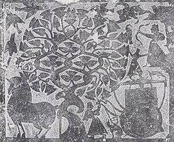
Fusang represents an ancient Chinese mythological tree and a symbolic location situated at the extreme east of the world, where the sun rises; according to the "Classic of Mountains and Seas" (Shanhaijing), Fusang is considered the oriental Tree of Life, likely a personification of the mulberry or hibiscus tree, growing in a remote region across the seas. This legend gained a stunning physical dimension following archaeological discoveries at the Sanxingdui site, where scientists believe the colossal bronze trees unearthed there—featuring intricate branches and golden birds representing suns—are the tangible embodiment of the "Fusang" tree, linking mythological imagination with the religious rituals of the ancient Shu civilization that venerated the sun and the tree as the two pillars of the cosmos.
The legend of the Fusang tree likely emerged during the Shang and Zhou dynasties (c. 1600–221 BCE), a period when the eastern regions of China became central to trade and culture; the tree's association with the Yellow Sea and provinces like Shandong and Jiangsu reflects the importance of these coastal areas as symbolic gateways. Furthermore, Fusang’s role as the portal for the sun’s daily journey aligns perfectly with Taoist cosmology, where the natural cycle and balance are of paramount importance, rendering the tree a symbol of the interconnectedness between earth, heaven, and the divine order governing existence.
Peaches of Immortality
In the high, mystical Kunlun Mountains of western China lies the secluded realm of the Queen Mother of the West, Xi Wangmu, whose sacred garden is home to the "Peaches of Immortality" that ripen only once every three thousand years, granting eternal life and divine powers to anyone who eats them; the most famous tale involving these peaches is that of the Monkey King, Sun Wukong, from the epic Journey to the West, who was tasked with guarding the orchard but instead consumed the fruit himself, gaining extraordinary powers and igniting a series of celestial conflicts. This narrative likely reached its literary peak during the Ming Dynasty (1368–1644), intertwining folk traditions with Taoist cosmology, which venerates the balance of natural forces and the pursuit of immortality.
The Jianmu Tree

The Jianmu tree was said to grow in the center of the world, connecting the heavens and the earth. In this legend, the Jianmu acted as a ladder for gods and mortals, allowing travel between realms. The tree’s trunk was so vast that its base extended deep into the underworld, while its branches reached high into the heavens, brushing against the halls of the celestial rulers.
The pivotal legend of the Jianmu tree tells a moral tale of the consequences of human greed, where villages near its base sought to exploit its power for selfish tools and weapons, causing a cosmic imbalance, the drying of rivers, and the withering of the tree itself; here, the wise Taoist Lingxu emerges, seeking to restore harmony through meditation, prayers, and purifying the roots with sacred herbs. Despite his efforts, the gods ultimately decided to sever the "Jianmu" to protect the celestial realm, scattering its fragments which gave rise to the sacred Banyan and Willow trees of southern China (notably in Guangxi and Yunnan). These trees remain as spiritual reminders of humanity's responsibility toward nature, reflecting the values of humility and balance established by early Taoist sects, such as the "Way of the Celestial Masters" in the 2nd century CE, drawing inspiration from the lush forests and aerial roots of southern China that resemble natural ladders to the heavens.
Jade Tree
.jpg)
In Chinese mythology, the Jade Tree represents the pinnacle of spiritual symbolism, depicted as a majestic entity crafted entirely from precious white or green jade. The sanctity of this tree lies in its extraordinary fruit; it is believed that the Jade Fruits it bears grant eternal immortality to anyone who partakes of them, making it the ultimate quest for spirits seeking to escape mortality.
.jpg)
This tree is inextricably linked to Xi Wangmu, the Queen Mother of the West and the guardian of the secrets of eternity. It flourishes in her celestial gardens atop the mythical Kunlun Mountain, serving as the centerpiece of the paradise where the immortals assemble. The use of jade—the most valued and revered stone in Chinese culture—as the tree's substance reflects its association with purity, strength, and an unbreakable permanence.
Tong Tree
.jpg)
This mystical tree stands upon the highest peak of the legendary Kunlun Mountain and is known in Chinese heritage as the "Celestial Tong Tree." It holds profound spiritual significance due to its location near the Gate of Heaven (or the Closed Gate), serving as a cosmic bridge or "physical ladder" that connects the mortal earthly realm with the immortal celestial world. It is not merely a plant but the axis of communication between humanity and the divine, acting as a secret passage for spirits striving to reach higher echelons of consciousness and existence.
JAPAN
Shinboku
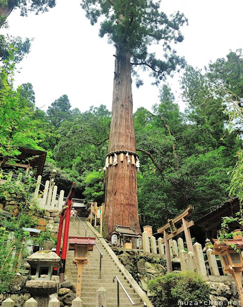
The Goshinboku (ご神しん木ぼく, "Sacred Tree"), also known as the Jidai-ju[1] (時じ代だい樹じゅ, "Tree of Ages" or "Era Tree") or the Goshinjidai-ju (神時じ代だい樹じゅ, "Sacred Tree of Ages" or "Era Sacred Tree"),
The Shinboku (literally "divine tree") constitutes a fundamental and structural element of Japanese Shinto shrines, transcending material architecture to serve as a spiritual dwelling for the Kami (spirits). These trees are readily identified by the Shimenawa—a sacred rope encircling the trunk—marking their sanctity and strictly prohibiting them from being felled or desecrated. This tradition reflects a striking anthropological parallel with Germanic paganism’s veneration of trees; while Yggdrasil or Donar’s Oak functioned as cosmic centers in the North, the Shinboku in the Far East remains a living conduit between nature and the spiritual realm, underscoring the universal archetype of the "Sacred Tree" within the human collective consciousness.
Sakaki Tree
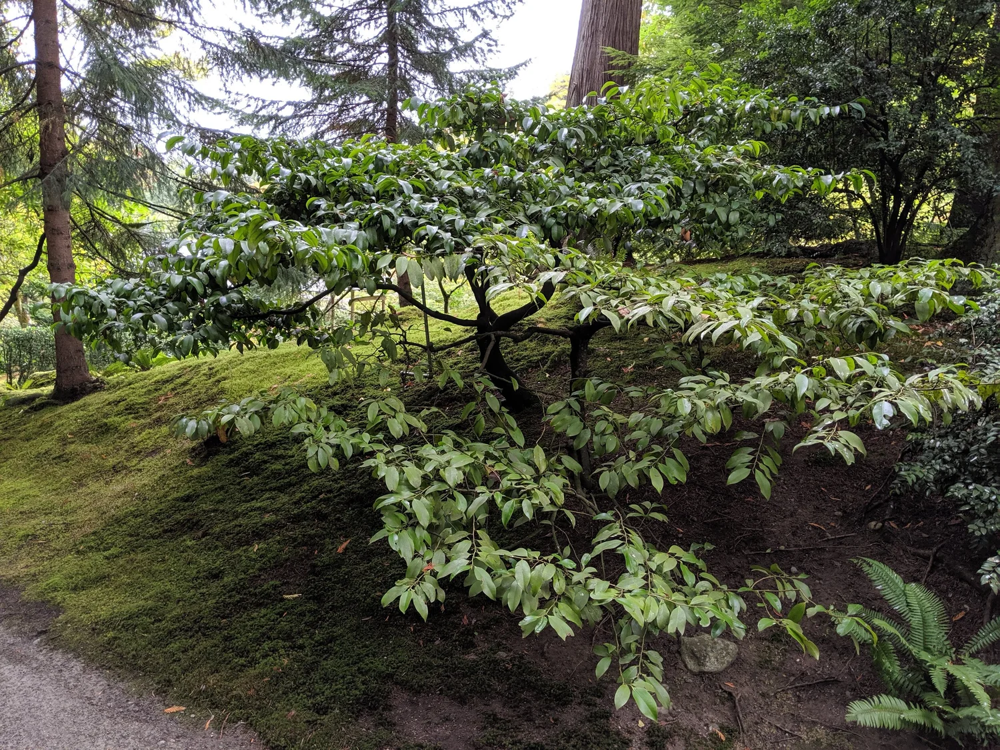
Cleyera japonica, known as Japanese cleyera, is a broadleaf evergreen shrub or small tree viewed as sacred in Japan’s original Shinto religion. Growing in woodlands and forest edges, it is native to the warmer areas of Japan, Korea, China and other countries of Southeast Asia.
In Japan, Cleyera is known as sakaki. This word originally referred to all evergreens, but it gradually came to refer only to members of the tea family (Theaceae). Sakaki is written 榊 with a kanji character that combines ki 木 "tree; wood" and kami 神 "spirit; god" – hence its identity as a "sacred or divine tree". Other explanations for the word’s meaning include the following: as an evergreen, it’s an “always thriving tree” (sakaeru-ki) – or, alternatively, as a “border-tree” (sakai-ki), it’s used in Shintoism to designate sacred space.
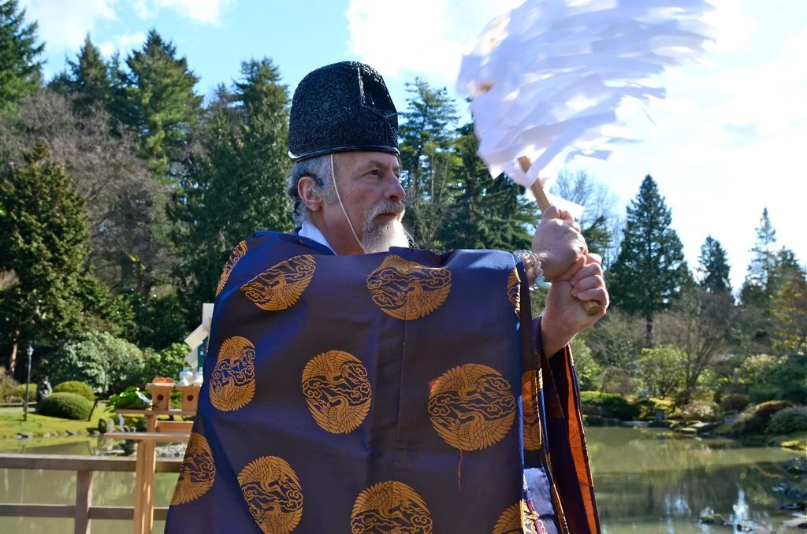
In Japanese mythology (Shinto), the Sakaki tree (Cleyera japonica) is central to the legend of Amaterasu, the sun goddess, and her emergence from the cave. When Amaterasu retreated, plunging the world into darkness, the gods devised a plan to lure her out by adorning the branches of a Sakaki tree with a mirror and jewels, placing it before the cave’s entrance. In Japanese thought, this tree was not merely a tool but a "sacred axis" linking the mortal realm to the spiritual world of the Kami. To this day, Sakaki branches remain integral to Harai (purification) rituals in shrines, serving as conduits to invoke divine presence and bless the space, much as they once restored light to existence in that primordial age.
KOREA
Zelkova Tree
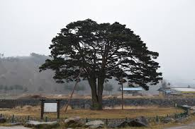
Korean Taoist traditions possess rich narratives regarding sacred trees, most notably the legend of the sacred tree of Mount Gongsan. This ancient Zelkova tree was said to be the spiritual dwelling of Heo Jun-seon, a renowned Taoist hermit famous for his profound wisdom and supernatural abilities. According to the legend, Heo Jun-seon meditated beneath the tree for decades, absorbing its life force and achieving enlightenment, rendering the tree a symbol of the union between human consciousness and mystical natural forces within the Korean imagination.
The tree’s branches were believed to stretch so high that they touched the heavens, while its roots penetrated deep into the underworld. Locals regarded it as a bridge between realms, offering their prayers and hanging colorful ribbons to seek blessings. The tree also became a site for Taoist rituals, where adepts would perform ceremonies to harmonize the energies of the heavens, earth, and humanity.
The legend takes a dramatic turn during the Goryeo Dynasty (918–1392 CE), when invaders sought to desecrate and destroy the sacred sites of Mount Gongsan; tales recount that the spirit of the hermit Heo Jun-seon manifested through the sacred tree, projecting a protective barrier of light that enveloped the entire mountain to repel the assault. This metaphysical intervention not only preserved the site but also solidified the Zelkova tree’s status as a living symbol of resilience, fortitude, and the latent spiritual power within nature, turning it into a sanctuary that embodies divine protection of Korean identity and land against external threats.
Zelkova trees in Korea, particularly in regions like Gyeonggi-do where Mount Gongsan is situated, continue to be deeply revered today as living symbols of longevity and spiritual guardianship; these legends intertwine Taoist principles with Korea's unique cultural identity, emphasizing the shared East Asian philosophy that views nature as an eternal source of wisdom and strength. The preservation of these trees as national monuments serves as a testament to the continuous spiritual bond between humanity and the earth, recalling the pivotal role the "Tree of Life" has played in shaping folk consciousness and withstanding historical upheavals.
The Tree of Wishes
On the sacred slopes of Mount Jirisan, one of Korea's most revered and majestic mountains, grows a mysterious and ancient pine known as the "Wishing Tree"; this tree is characterized by its twisted trunk and intricate branches, sculpted by centuries of wind and rain, giving it an appearance of profound strength and sanctity. According to Korean legend, the tree was planted by a Taoist sage who sought to create a spiritual bridge connecting human aspirations with the realm of celestial beings, as it is believed that the prayers and wishes of visitors ascend with the mountain breeze through its branches to reach the heavens.
Pilgrims and villagers would travel great distances to reach the tree, carrying wooden plaques on which they inscribed their deepest desires and prayers. These plaques, tied to the tree’s branches with colorful ribbons, were believed to ascend to the heavens with the morning mist. The ritual of tying wishes to the tree became a sacred act, symbolizing hope and the connection between the human spirit and the divine.
A famous legend tells the poignant story of a young woman named Seonhwa, who embarked on a treacherous journey through rugged mountain paths in search of the "Wishing Tree" to save her terminally ill father; upon reaching the ancient pine, she tied her wish to its highest reachable branch as a symbol of her plea. That night, she dreamed of a celestial being who guided her to a rare medicinal herb growing at the tree's roots; the following morning, Seonhwa found the herb and used it to heal her father, solidifying the tree's reputation in folk consciousness as a spiritual conduit for miracles and a bridge linking noble human intentions with divine intervention.
ROME
Fig Tree
.jpg)
The ancient fig tree in the Roman Comitium, known as the Ficus Ruminalis, represents a living embodiment of the link between the state's sovereignty and a botanical vessel. According to Roman mythology, it was revered as a direct descendant of the tree beneath which the wolf nursed Romulus and Remus. Far more than a mere historical relic, it functioned as a spiritual barometer for the Empire; a firm belief persisted that Rome’s destiny was organically intertwined with the tree's vitality.
The historian Tacitus chronicles a definitive moment of collective dread during the reign of Nero, when the sacred tree’s branches suddenly began to wither—an event interpreted as a metaphysical omen of the state’s decay and impending ruin. However, this terror dissolved into profound relief following the Emperor's death, when the tree miraculously regained its vigor. It was as if nature itself were signaling, through this botanical rebirth, the conclusion of a dark era and the dawning of a new epoch for the Eternal City.
Myrtle Tree
Pliny conveys a unique paradigm of "political germination" through two myrtle trees that grew before the Temple of Quirinus in Rome, distinguished as the "Patrician Myrtle" and the "Plebeian Myrtle." As myrtle symbolized unity and concord, these trees mirrored the class power balance of Rome; when the patricians encroached upon the rights of the commons, their tree flourished, casting a somber shadow over the withering plebeian tree. However, following the Marsic War and the waning influence of the Senate, their fates inverted: the patrician tree showed signs of senescence while the plebeian tree sprouted with renewed vigor—a remarkable alignment between botanical biology and political sociology.
CHRISTIANTY
In the Book of Genesis, the first book of the Bible, both the tree of life and the tree of knowledge are said to grow in the Garden of Eden. After Adam and Eve eat from the tree of knowledge, God bars them from the garden, setting an angel with a flaming sword to keep them out so they will not eat from the tree of life and become immortal. The idea of the tree of life subsequently became important to many Jewish and Christian traditions.
These theological insights from Church Fathers and thinkers represent a fundamental shift in the understanding of the Tree of Life, moving the symbol from a "botanical entity" in Eden to a "spiritual person" embodied in Christ. Pope Benedict XVI asserted that the Cross is the "true Tree of Life," transforming a historical instrument of death into a source of eternal life. Similarly, Saint Bonaventure delved into the medicinal aspect, teaching that the "healing fruit" of this tree is none other than Christ himself, who restores the human soul. Saint Albert the Great linked the tree to the "Eucharist," viewing the Body and Blood of Christ as the true fruit that sustains the faithful. Augustine of Hippo summarized this vision by explicitly declaring that "the Tree of Life is Christ," rendering Paradise a state of perpetual spiritual connection with the Creator, where the "wood" evolves from a symbol of mortality in Adam's story to a symbol of immortality and healing in the story of Salvation.
The Tree of Life is one of the most prominent theological and cosmic symbols introduced in the Old Testament, specifically in Genesis (2:9 and 3:22-24). It is described as a sacred botanical entity providing eternal life to those who consume its fruit within the Garden of Eden.
Genesis 2:9:
out of the ground the Lord God brought forth every tree that is pleasing to oneself and good for food, and the tree of life in the midst of the garden, and the tree of knowledge “Good and evil.”
Genesis 3:22-24 (after the fall):
“And the Lord God said: Behold, the man has become like one of us, knowing good and evil. And now perhaps he will put out his hand and take also from the tree of life and eat and live forever. So the Lord God brought him out of the Garden of Eden to cultivate the land from where he had been taken. And he drove out man, and set cherubim and a flaming sword at the east of the Garden of Eden, to guard the way to the tree of life.”
In traditional theological interpretations (Byzantine and Catholic), the Tree of Life represents the spiritual bridge between "Paradise Lost" and "Paradise Regained." Its presence on both sides of the River of the Water of Life is viewed as a symbol of universal cosmic healing ("the leaves of the tree were for the healing of the nations"). Sacramentaly, theologians link the fruit of this tree to the Eucharist (Communion), regarding it as the spiritual sustenance that grants eternal life, while the flowing river symbolizes Baptism as the gateway to renewal and reentry into the Divine Presence. Sociologically and historically, this vision reflects the transformation of the tree from a mere botanical entity in an ancient text into a living icon of salvation and human unity. Its healing is not restricted to individuals but extends to "the nations," establishing it as a symbol of global peace and the ultimate reconciliation between the Creator and creation in the Kingdom of God.
Most theologians see it as one giant tree (or collective type: "the tree of life" without the definite article in Greek, any kind of tree), growing on both sides of a river (like trees on the banks of a wide river). Some connect it with the true vine in John 1:15 (Christ as a vine, and believers as branches), so it is a symbol of unity with Christ.

The Vision of Lehi in the Book of Mormon adds unique symbolic and dramatic dimensions to the concept of the Tree of Life, transforming it from a mere element of Paradise into the ultimate destination of a grueling journey through a "dark and dreary waste." Sociologically and morally, this vision encapsulates the human struggle between steadfastness and wandering; while the tree and its shimmering white fruit symbolize the "love of God" and the salvation that brings exceeding joy, the "Iron Rod" emerges as a symbol of integrity and clinging to the word of God amidst the "mists of darkness" that lead travelers astray. The vision also presents a sharp contrast between the humble partakers of the fruit and the inhabitants of the "Great and Spacious Building" who mock the righteous,
The walls of St. Mark's Cathedral in Venice house ancient carved panels featuring a stylized botanical motif flanked by two mythical creatures, arranged in a composition as enigmatic as any heraldic emblem. While these carvings might appear to the casual observer as mere products of the grotesque Medieval imagination, a scholar of Oriental art recognizes a structural unity with a lineage spanning six millennia, tracing back to the Sumero-Akkadian synthesis along the shores of the Arabian Gulf. The central plant serves as a pictographic symbol of a divine attribute or a physical manifestation of the deity’s abode, while the uplifted appendages of the flanking figures signify the traditional posture of ritualistic veneration. Ultimately, this design—which migrated from Assyria to Persia, through Byzantium, and finally to Venice—represents a material remnant of an archaic religious tradition that consecrated the tree as a theophanic space.
JUDAISM
Elon Moreh (Oak Tree)
.jpg)
The tree of Elon Moreh occupies a pivotal position within sacred geography, its Hebrew designation weaving together botanical endurance and prophetic function. The term "Elon" denotes a majestic oak or terebinth—trees renowned for their longevity and stature—while "Moreh" carries a profound epistemic weight, translating to "Teacher," "Diviner," or "Revealer."
This linguistic synthesis suggests that the tree was not merely a landmark in Shechem but a "sanctuary of knowledge," where seers or spiritual instructors presided to proclaim oracles or unveil hidden truths. It represents the intersection where the consciousness of the "Teacher" meets the steadfastness of the "Oak," rendering the tree itself a medium for divine wisdom.
“And Abram passed through the land to the place of Shechem, to the oak of Moreh.”(Genesis 12:6)
This tree was an ancient Canaanite center of divination and oracles before the Israelites, and its sanctity persisted even after their arrival. Canaanites would come to it to receive divine pronouncements, revelations, or prophecies. It was likely an oak or terebinth tree (a type of terebinth). It was considered the dwelling place of a local Canaanite deity and may be associated with the worship of Baal Berith, mentioned in the Book of Judges.
.jpg)
It is believed to be located near Tel Balata (near Old Nablus - Shechem), and there is a large oak tree called "Abraham's Oak" or "Jacob's Oak" in the area, which is still revered and blessed by some residents today.
The spiritual lineage of Elon Moreh remained unbroken despite major theological shifts, as its sanctity transitioned from Canaanite heritage into the Abrahamic tradition. Upon Abraham's entry into the land of Canaan, this tree served as the focal point of his journey, the very site where he received the divine promise. His construction of an altar "near" the tree was not a mere incidental choice of location, but rather an acknowledgment of the site as a sacred sanctuary and a nexus for celestial communion. Consequently, the tree was transformed from a stronghold of Canaanite divination into a monotheistic landmark, bridging the ancient history of the land with the mission of the Patriarchs—remaining a living witness to the continuity of the "geography of revelation" throughout the ages.
Etz HaChaim
.jpg)
In Jewish tradition, the Torah embodies the supreme concept of the "Tree of Life" (Etz Chaim); it is not merely a religious text, but the vital source of Divine wisdom and moral life. This profound connection is manifested in synagogue rituals, particularly within Ashkenazi traditions, where a verse inspired by Proverbs (3:18) is chanted when returning the Torah scroll to the Holy Ark, affirming that clinging to it is the path to happiness and spiritual immortality. Materially and symbolically, the wooden rollers upon which the parchment is wound are called "Atzei Chaim" (Trees of Life), transforming the manuscript into an organic entity that nourishes the believer's soul. Sociologically, this concept reflects the transition of the symbolism of immortality from a "physical fruit" in Eden to "spiritual knowledge" and the practical application of commandments, establishing the Torah as an evergreen tree at the heart of the community, granting psychological balance and moral elevation to all who hold fast to its branches.
"It is a tree of life to whoever clings to it; whoever strengthens it will be blessed."
In the Kabbalah (Jewish Kabbalah, the Jewish mystical tradition), the Tree of Life (Hebrew: עֵץ חַיִּים – Etz Chaim) is one of the most central and best-known symbols. It is not a literal physical tree, but rather a symbolic map (diagram) that represents the structure of the universe, the way God created the world, and the path of man's spiritual ascension towards union with the divine.
Rabbi Isaac Luria (known as the "Ari" - the Lion, 16th century in Safed), along with his disciple Hayyim Vital (in the book "The Tree of Life" or Etz Chaim), introduced a radical shift in the understanding of the Tree of Life (Etz Chaim) within Kabbalah. They transformed it from a "symbol" into a "precise map" of the mechanism of Creation and Cosmic Repair ("Tikkun"). The Ari developed his famous theory of the "Shattering of the Vessels" (Shevirat ha-Kelim), a foundational cosmic crisis that occurred when the divine vessels could not contain the overwhelming influx of light. Since then, the Tree of Life with its ten spheres ("Sefirot") has been viewed as a reparative device programmed to gather the sparks scattered after the Shattering, rearranging them in a sacred balance. This renders human spiritual labor on Earth an essential, participatory role in correcting cosmic flaws and rebuilding the structure of life.
Jewish mystics, particularly in the Zohar (the foundational text of Kabbalah, 13th century), perceive the Tree of Life not merely as a botanical symbol, but as a living embodiment of the flow of "Divine Light" (Ohr Ein Sof) from the Infinite into the material world. In this context, the ten "Sefirot" (divine emanations) are understood as the "garments" or channels through which the Creator clothes Himself to interact with the world, ensuring the intensity of His light does not overwhelm the essence of existence. Sociologically and philosophically, Kabbalah transformed the tree into an ontological framework linking divine attributes (such as Wisdom, Mercy, and Justice) with human conduct. It is believed that the balance of these forces within the spiritual tree directly reflects the balance of the physical world, rendering the "Tree of Life" a moral and cosmic constitution explaining Divine providence and humanity's relationship with this hidden order.
The academic debate between Simo Parpola and G.H. Chase represents a profound intellectual conflict regarding the historical roots of the Tree of Life. Parpola champions the "Assyrian Origin" thesis, asserting that the concept is rooted in the Neo-Assyrian Empire (9th century BCE). He argues that the Assyrians assigned specific moral and numerical values to Mesopotamian deities in a manner echoing the Kabbalistic "Sefirot," viewing the sacred tree as a model for the celestial king—a parallel to the concept of "Adam Kadmon" (the Primordial/Cosmic Man). Conversely, Chase rejects these speculative ancient links, tracing the tree's origins to later philosophical and scientific contexts, specifically "Porphyry's Tree" (logical) and celestial mapping. He considers it an intellectual evolution independent of Assyrian mythology.
ISLAM
The Tuba Tree
The Tuba Tree (Shajarat Tuba) represents the ultimate symbol of eternal bliss and perpetual joy in the Islamic vision of Paradise; it is a magnificent tree rooted in the Abode of Truth, with its shade extending to encompass all the inhabitants of Heaven. Its name is derived from "goodness," "happiness," and "bliss," and it appears in the Holy Quran in Surat Ar-Ra'd as a divine glad tiding for believers who coupled their faith with righteous deeds, promising them a goodly life and a beautiful place of return. Prophetic traditions describe the vastness of this tree, stating that a rider on a swift horse could travel in its shade for a hundred years without reaching its end, and that the garments of the people of Paradise emerge from the calyxes of its fruit, rendering it a comprehensive "Tree of Life" that sustains both soul and body in the Hereafter.
“Those who believe and do righteous deeds, blessed will they be, and a good home.”
“In Paradise there is a tree in whose shade a rider can travel for a hundred years without cutting it.”This prophetic tradition (Hadith), narrated by Abu Hurayrah and recorded in the Sahih collections of Al-Bukhari and Muslim, provides the most awe-inspiring description of the grandeur of the Tuba Tree (or the Tree of Paradise); it transports human consciousness from the limitations of earthly perception to the vastness of eternity. The description of a rider traveling in its shade for "a hundred years without reaching its end" does not merely reflect physical magnitude, but symbolizes the all-encompassing nature of divine care and the inexhaustible expanse of bliss. This renders it a cosmic "Tree of Life" that shelters souls within the abode of mercy, granting believers a sense of absolute security and tranquility in the realm of immortality.
“A tree in Paradise, a journey of one hundred years, from whose sleeves the clothes of the people of Paradise emerge.”This noble Prophetic tradition (Hadith) narrated by Abu Sa'id al-Khudri (and recorded by Imam Ahmad) emphasizes the miraculous dimension of the Tuba Tree; its function is not limited to providing shade for a century-long journey, but extends to being the celestial source of the "garments" for the inhabitants of Paradise. The Prophet's statement (PBUH), "The garments of the people of Paradise emerge from its calyxes," portrays the tree as a living entity overflowing with all the elements of dignity and beauty, where the finest divine robes and textiles spring forth from within its fruit husks. This renders the tree a symbol of absolute self-sufficiency and eternal luxury that transcends the natural laws of the earthly realm.
The Prophetic tradition (Hadith) of the Bedouin, narrated by Ahmad and Ibn Kathir in Al-Bidayah wan-Nihayah, provides a stunning visual analogy for the grandeur of the Tuba Tree; it brings the description closer to human understanding by likening it to the "Walnut Tree" (Al-Jawzah) common in the Levant (Bilad al-Sham), characterized by a single straight trunk that spreads out at the top like a vast canopy. The Hadith describes the immense girth of its trunk in miraculous terms: if a camel were to travel around its base, it would not complete the circuit even if it lived to a frail old age; as for its grapes, a single cluster spans a distance that would take a crow a full month of continuous flight to cover, and a single grape is sufficient to satisfy a man and his entire clan. This solidifies the Islamic "Tree of Life" as a cosmic source of absolute abundance and beauty that transcends the limits of the human mind.
The epic imagery of the Tuba Tree reaches its peak in narrations attributing its planting directly to the Hand of God Almighty, granting it exceptional sanctity and distinction among all creations of Paradise; these accounts (as mentioned by Ibn Jarir and others) describe its branches as being so vast and radiant that they can be seen from beyond the outer walls of Heaven. Furthermore, the tree does not merely produce fruit, but sprouts jewelry and garments (Al-Hulla) as divine gifts prepared for the blessed. Regarding its location, it is widely held that its roots are in Al-Firdaws al-A'la (the highest level of Paradise), yet the miraculous reach of its boughs ensures that every dwelling in Heaven has a specific "fanan" or branch from it, symbolizing that the overflow of this tree reaches every believer as an honor from God—making it the comprehensive cosmic canopy for all inhabitants of the eternal realm.
The Prophetic traditions mention several good deeds by which a believer can attain the Tree of Paradise (Tuba), including:
“Blessed is he who has seen me and believed in me once, and blessed is he who has not seen me and believed in me seven times.”
“Blessed is he who is guided to Islam, whose life is sufficient, and who is content.”
“Blessed is Syria, blessed is Syria, blessed is Syria.” They said, “O Messenger of God, why is that?” He said, “Those are the angels of God, spreading their wings over Syria.”
“Blessed is Syria, blessed is Syria, blessed is Syria.” They said, “O Messenger of God, why is that?” He said, “Those are the angels of God, spreading their wings over Syria.” “Blessed is he whose earnings are pure, whose inner self is righteous, whose outward conduct is honorable, and who withholds his evil from others. Blessed is he who acts upon his knowledge, spends from his wealth, and refrains from excessive speech.”
“On the authority of Aisha, may God be pleased with her, she said: Blessed is he who finds much seeking of forgiveness in his record.”
“Blessed is he whose earnings are pure, whose inner self is righteous, whose outward conduct is honorable, and who withholds his evil from others. Blessed is he who acts upon his knowledge, spends from his wealth, and refrains from excessive speech.”
Sidrat al-Muntaha
Sidrat al-Muntaha (The Lote Tree of the Farthest Boundary) represents the highest pinnacle of proximity and sanctity in Islamic belief; it is the cosmic tree that marks the definitive boundary of the created realms, where everything ascending from the earth and descending from above reaches its ultimate limit, and where the knowledge of all creatures and archangels concludes. The Holy Quran immortalizes it in Surat an-Najm as the site of a magnificent divine manifestation and a unique prophetic vision, where Prophet Muhammad (PBUH) beheld the Angel Gabriel in his true celestial form. Prophetic traditions describe its indescribable beauty, with branches shaded in gold, covered by "moths of gold," and enveloped by divine lights of such splendor that no mortal could depict its excellence—rendering it the "Tree of the Ultimate Limit" that separates the world of creation from the realm of the Absolute Unseen.
"And he certainly saw him another time, at the Lote Tree of the Utmost Boundary, near which is the Garden of Refuge, when there covered the Lote Tree that which covered it. His sight did not swerve, nor did it transgress. He certainly saw some of the greatest signs of his Lord".Sidrat al-Muntaha (The Lote Tree of the Farthest Boundary) represents the ultimate threshold between the realm of creation and the absolute Unseen; it is the "Tree of the End" where the knowledge of angels and all creatures concludes, and to which everything ascending from Earth—deeds and souls—and everything descending from above—commands and decrees—reaches its final limit. This tree is intrinsically linked to the Garden of Abode (Jannat al-Ma'wa), the secure sanctuary for the righteous. It witnessed the greatest divine manifestations during the Night Journey (Miraj), enveloped by such divine light and indescribable colors that no human tongue can depict its splendor. While "Lote trees" are mentioned in other contexts, such as the trees of this world (Surat Saba) or general paradise (Surat al-Waqi'ah), "Sidrat al-Muntaha" remains unique as the cosmic tree defining the boundaries of created existence and revealing the supreme signs of the Creator.
The epic imagery of Sidrat al-Muntaha (The Lote Tree of the Farthest Boundary) is completed in the Hadiths of the Night Journey and Ascension (Al-Bukhari and Muslim), where its grandeur is conveyed through stunning sensory analogies; describing its leaves as "elephant ears" and its fruits as the "clay jars of Hajar" illustrates its immense scale, transcending all familiar measures. From its roots spring four cosmic rivers symbolizing life and grace—two manifest (the Nile and the Euphrates) and two hidden within the bliss of Paradise. The dramatic climax occurs when the Archangel Gabriel halted at its boundary, stating: "If I were to advance a single step, I would be consumed by light," marking the Lote Tree as the end of the realm of angelic mediation and the beginning of the Absolute Divine Presence reserved for the Prophet (PBUH) alone. Thus, the "Tree of the Ultimate Limit" remains shrouded in divine lights, golden moths, and a beauty beyond human description, standing as a witness to the establishment of Prayer as the eternal link between the servant and the Creator.
These summarized views of great scholars (such as Al-Nawawi and Ibn Kathir) emphasize the pivotal role of Sidrat al-Muntaha as a cosmic "fulcrum"; it is not merely a tree in Paradise, but the harbor where the journey of human and angelic consciousness concludes, and the confluence where the ascending and descending movements of existence meet. The fact that its roots are in the Sixth Heaven while its branches embrace the Seventh and beyond renders it the entity that bridges the layers of existence. It serves as a living symbol of divine continuity and the boundaries set by the Creator for His creation, where both reason and angelic revelation halt at its borders in reverence for the grandeur of what lies beyond.
In his explanation of Sidrat al-Muntaha, Imam al-Nawawi states that the origin of the Nile and the Euphrates is from Paradise, and that they come out from the base of Sidrat al-Muntaha, then they travel wherever God wills, then they descend to the earth, then they travel in it, then they come out of it. This is not prevented by reason, and the apparent meaning of the hadith testifies to it, so it should be relied upon.
As for Qadi Iyad, he says that the hadith about the origin of the lote tree of the utmost boundary being on earth is based on the statement that the Nile and Euphrates flow from its base. However, it is observed that they do indeed flow from the earth, which would necessitate that the lote tree's origin is on earth. This is a flawed argument, as the meaning of them flowing from its base is not the same as their springing forth from the earth. The conclusion is that its origin is in Paradise, and they first flow from its base, then travel until they settle on earth and then spring forth. This has been used as evidence for the superiority of the water of the Nile and Euphrates because their source is in Paradise. Al-Qurtubi said: It has been said that these rivers are called "from Paradise" because they are likened to the rivers of Paradise due to their intense sweetness, beauty, and blessings. The first interpretation is preferable, and God knows best.
The Zaqqum Tree
The Zaqqum Tree represents the absolute antithesis of the trees of Bliss (such as Tuba and Sidrat al-Muntaha) in Islamic belief; it is the "Cursed Tree" that springs from the very core of Hellfire to serve as the severest form of psychological and physical torment for the inhabitants of Gehenna. The Holy Quran describes it as a "trial for the wrongdoers," as disbelievers rationally doubted how a tree could grow in the midst of fire without being consumed; the divine response established it as a miracle and a manifestation of power beyond earthly laws. Religious texts depict its fruit in the most loathsome imagery, emerging from the depths of Hell with branches ascending through its levels, serving as forced sustenance that causes a boiling sensation in the belly like scalding water—rendering it a symbol of the bitter harvest reaped from one's unjust deeds.
"Is that a better accommodation or the tree of Zaqqum? Indeed, We have made it a trial for the wrongdoers. It is a tree that emerges from the bottom of Hell. Its fruit is like the heads of devils. They will surely eat from it and fill their bellies with it. Then they will have a mixture of boiling water therefrom. Then their return will surely be to Hell".These verses from Surat as-Saffat draw a chilling scene of the psychological and physical punishment embodied by the Zaqqum Tree; it is not merely bitter food, but a comprehensive system of torment starting with repulsive visual ugliness and ending with agonizing internal pain. Describing its fruit (Tal'uha) as "like the heads of devils" is the pinnacle of metaphorical repulsiveness, as the human imagination holds the devil as the ugliest possible concept, making the mere sight of the fruit a torment even before it is tasted. Furthermore, the fact that the inhabitants of Hell are forced to fill their bellies with it despite its bitterness and filth, only to follow it with "Hamim" (scalding water), depicts a state of utter despair, hunger, and unquenchable thirst that only increases the internal boiling and burning—rendering the Zaqqum the bitter harvest that the wrongdoers reap from the seeds of their earthly deeds.
"Indeed, the tree of Zaqqum is the food of the sinful. Like molten brass, it boils within bellies, like the boiling of scalding water".The verses from Surat ad-Dukhan add terrifying sensory and kinetic dimensions to the description of the Zaqqum Tree; the torment is not limited to external ugliness or bitterness but extends to a thermal and chemical reaction within the bodies of the "Athim" (the persistent sinner). The power of the Quranic imagery shines in likening the effect of this food to "Al-Muhl"—turbid boiling oil or molten metals reaching extreme temperatures—as it "boils in the bellies" exactly like scalding water (Al-Hamim) boils in a cauldron. This description depicts a state of internal combustion and the tearing of entrails, rendering the tree that sprouted in fire the very fire that consumes the innards of those who chose misguidance in the world. Thus, the act of eating—which is a source of life for the living—is transformed into a source of destruction and eternal agony for the criminals.
"Then indeed you, O misguided deniers, will eat from a tree of Zaqqum and fill your bellies with it, and drink on top of it boiling water, drinking like thirsty camels. This will be their welcome on the Day of Judgment".The verses from Surat al-Waqi'ah provide the final, completing touch to the scene of torment associated with the Zaqqum Tree, meticulously describing the wretched psychological and physical state of the "errant deniers." The verses do not merely mention their consumption of the Cursed Tree but describe their drinking of "Al-Hamim" (scalding water) atop it as "the drinking of Al-Heem." Al-Heem refers to camels afflicted with a specific ailment ("Huyam") that causes them to drink voraciously and incessantly without ever feeling quenched; rather, their thirst intensifies with every drop until they perish. This analogy depicts the pinnacle of unquenchable thirst, where water—the secret of life—is transformed into a searing substance that heightens the fire within the entrails. Thus, Zaqqum and Hamim together constitute the "Nuzul" (the initial reception or hospitality) provided to them on the Day of Judgment as a fitting recompense.
"If a drop of Zaqqum were to fall into the world, it would ruin the lives of the people of the earth".This Prophetic tradition (Hadith)—recorded by Al-Tirmidhi and Ibn Majah—illustrates the devastating cosmic impact of the Zaqqum Tree, bringing the horror of its torment from the realm of the Unseen into the imagination of the world's inhabitants. The idea that a single "drop" of it, if fallen into Earth's oceans or mixed with its resources, would be enough to poison life and ruin the livelihoods of all mankind is a powerful testament. This description does not merely highlight physical bitterness but symbolizes the immense concentration of evil and agony within this Cursed Tree. It stands as the absolute antithesis of the Tuba Tree, whose shade overflows with bliss; while Tuba perfects the life of the people of Paradise, a single drop of Zaqqum possesses the power to destroy the entire planet—serving as an eloquent Prophetic warning against the consequences of falling into the depths of injustice and tyranny.
Gharcad tree (Nitraria)
The Gharcad tree was mentioned in the Prophetic tradition as a Jewish tree, so named because, as stated in the hadith narrated by Abu Hurairah, the Messenger of God, may God bless him and grant him peace, said:
The Hour will not come until the Muslims fight the Jews and kill them, until the Jew hides behind a rock or a tree, and the rock or tree will say, "O Muslim, O servant of God, there is a Jew behind me, so come and kill him, except for the Gharcad tree, for it is one of the trees of the Jews.
The Gharqad tree is associated with the Jews because the Israelites cultivate it extensively. It is said that the Jews cultivate it in fulfillment of the prophecy of the Prophet Muhammad, peace and blessings be upon him, that this type of plant will be the only protector of the Jews in the battle of the end times.
The Jews call this tree 'Awsaj', and it is found in Iraq under the name 'Sarim'. It grows abundantly in dry places or where water is scarce. In some areas, people place it on the walls of houses in rural towns, especially those who have sheep, to protect them from predators that cross over the walls, because it has many thorns and prevents animals from approaching.
It is worth noting that the Israeli newspaper Yediot Aharonot reported in 2014 that the Israeli authorities were surprised that the railway lines connecting the cities of Ashkelon and Ashdod were not exposed to missiles despite the continuous bombing that targeted the two cities during Tel Aviv’s last war on the Gaza Strip. This is due to the dense trees that Israel is keen to plant of the “Gharqad” type, which were able to repel the resistance missile attacks launched from the Gaza Strip on the Israeli railways.
The Gharqad tree (Boxthorn) appears in historical heritage carrying heavy symbolic weight, most notably in the accounts associated with Muslim bin Uqba al-Murri prior to the "Battle of al-Harra." Sources recount that Muslim bin Uqba, appointed by Yazid bin Mu'awiya to lead the army toward Medina, experienced a dream in which a Gharqad tree addressed him, designating him as a leader or commanding him to march forth.
MANDAEAN
The Tree of Life (Lani) in Mandaean belief is a visual and philosophical embodiment of the flow of "Great Life" (Hayyi Rabbi) from the World of Light into the cosmos. In Mandaean manuscripts and scrolls (such as the Diwan Abatur), it is not depicted as a terrestrial botanical entity but as a geometric and abstract network of branches symbolizing the interconnectedness of souls and the flow of divine radiance, these celestial trees in the realm of "Mshunia Kushta" represent the ideal state of existence, where the fruits are pure souls and the branches are manifestations of the eternal attributes of "The Living One." The Mandaean tradition of drawing these trees in the Skhindu (illustrated scrolls) reflects a profound belief that the universe is not solid matter but a "living tree" breathing light, with its roots connected to the Yardena (sacred living water). This renders the Mandaean Tree of Life a symbol of spiritual resilience and continuity for one of the oldest monotheistic religions that has preserved the mystical heritage of Mesopotamia.
Shatrin
In Mandaean mythology, the tree "Šatrin" represents one of the most beautiful spiritual concepts regarding soul care, classified as a "Celestial Nursery Tree" located in the higher realms (Diwan Abatur). Sociologically and mythologically, this magnificent tree—with its legendary height of 360,000 Parasangs—reflects divine mercy toward children who passed away before receiving the rite of Masbuta (baptism). Instead of being left in limbo, the tree opens its branches as a temporary sanctuary where their souls are nourished by its radiant fruits for thirty days. This spiritual journey culminates on the thirtieth day when the savior "Hibil Ziwa" baptizes them, purifying and finally transporting them to the eternal World of Light. In Mandaean heritage, Šatrin embodies the concept of "Compassionate Divine Justice," ensuring no innocent soul is deprived of light, but is instead granted the opportunity to ascend through a celestial botanical medium linking temporary existence with absolute immortality.
AFRICA
The Baobab Tree
The Baobab tree (scientifically known as Adansonia), also called the Tabaldi or Bottle Tree, is one of the most astonishing botanical entities in the world, serving as a biological and mythical icon across the African savannas, Madagascar, and Australia. This massive tree is known by various titles that reflect its vital importance and unique appearance, such as the "Tree of Life" for its extraordinary ability to provide food, water, and shelter in arid environments, and the "Upside-Down Tree" due to its branches resembling roots stretching toward the sky. The Baobab is distinguished by its incredible capacity to store thousands of liters of water within its swollen trunk, acting as a "natural water reservoir" and a symbol of resilience and strength against harsh droughts. Furthermore, it serves as a rich subject for countless folk legends that revere it as the "Mother of the Forest" and the guardian of ancient secrets.
The Legend of the "Upside-Down Tree" is the most prevalent mythological explanation in African cultures (especially among the Zambezi tribes) for the Baobab's (Adansonia) unique appearance. Oral traditions recount that the Creator, in a moment of anger at the tree's pride or its persistent complaints about its location and form, uprooted it and replanted it upside down. Sociologically, this myth explains the strange morphological structure of the Baobab's branches, which resemble roots reaching toward the sky, creating the visual impression that the tree is growing in reverse. In the collective imagination, this story serves as a moral lesson against vanity, transforming the Baobab's biological resilience in arid environments into a lasting symbol of divine retribution that has, over time, become a source of life and beauty in the heart of the savanna.
In many African beliefs, the Baobab tree is regarded as a "repository for ancestral spirits" and a bridge connecting the living with the realm of the deceased. The vast hollows of its massive trunks are viewed as sacred dwellings for guardian spirits. Due to their ability to endure for thousands of years, these trees have sociologically evolved into symbols of authenticity and continuity, leading many tribes and local communities to adopt them as centers for religious rituals and pivotal gatherings, often imposing strict prohibitions on felling them out of reverence for these spirits. This sanctity is manifested in spiritual practices where amulets and sacred symbols are buried near their deep roots, ensuring the Baobab remains the "World Tree" in the African imagination—protecting communal identity and preserving a history that spans generations.
Iroko Milicia Excelsa
The Iroko tree (Yoruba: Ìrókò; scientific name: Milicia excelsa), often referred to as "African Teak," is one of the most revered and feared botanical entities in West and Central African folklore, particularly in Nigeria, Ghana, and Benin. Beyond its practical value as a durable, rot-resistant hardwood, the tree occupies a central place in spiritual practices and deep-seated legends. Due to its massive size and longevity, which can span hundreds of years, it is sociologically classified as a "Haunted Tree" or a "Tree of Spirits." Many believe it serves as a dwelling for invisible beings or powerful spirits that bestow wisdom upon those who revere them, while cursing those who mishandle the tree. Within the African imagination, the Iroko stands as an invincible symbol of both natural and spiritual power, serving as a pillar for historical and social rituals that blend material utility with metaphysical awe.
In profound African beliefs, the Iroko tree is the dwelling of the "Iroko-man" spirit, a formidable supernatural entity. It is firmly believed that anyone daring to look directly at him will be struck by instant madness or face a swift death. Due to its towering height, myths depict its skyward branches as the "Throne of God" or a ladder connecting Earth to the higher realms, imposing an aura of absolute sanctity that forbids its felling. Those who violate its sanctuary are said to face great calamities that can only be averted through seeking forgiveness and offering sacrifices. This spiritual rigor is epitomized in the Legend of "Oluronbi," which illustrates the consequences of betraying natural forces; after gaining fertility and a child in exchange for a vow to the tree, she broke her promise, prompting the Iroko's inevitable and harsh retribution. Thus, in the collective imagination, this botanical being is transformed from a source of blessing into a ruthless moral guardian of human integrity.
The Legend of "Oluronbi" is one of the most famous cautionary tales in Yoruba folklore associated with the sacred Iroko tree. The story recounts the tragedy of a barren woman who pleaded with the tree's spirit for a child, promising to offer her most precious possession as a sacrifice if her wish were granted. When the tree fulfilled her request and she bore a beautiful child, Oluronbi's maternal instinct led her to break her vow. This incited the wrath of the Iroko spirit, which never forgives a broken promise, leading to the child being taken to remain captive within the tree forever.
Jugurtha Plateau in Tunisia
A hypothesis claims that the Jugurtha Plateau in Tunisia represents the largest remains of a giant fossilized tree trunk in North Africa. This vision is based on the morphological reading of the plateau’s flat surface, which is interpreted as the original “cutting space” of the cosmic tree, while the surrounding vertical rocky slopes are interpreted as embodying wood fibers or growth rings that have undergone a comprehensive process of fossilization over the ages.
heglik-tree Sudan
On the remote outskirts of the Darfur province, the Bedeyat Arabs continue to adhere to a primitive devotional cult, despite being surrounded by Moslem tribes. Beneath the expansive branches of a colossal Heglik tree, and within a space meticulously maintained and sprinkled with fine sand, they offer supplications to an unknown deity, seeking guidance in their endeavors and protection from existential perils. This ritualistic scene exemplifies the resilience of archaic spiritual frameworks and their capacity to persist as "cultural enclaves," maintaining the sanctity of the tree as a liminal space between humanity and transcendental forces.
Congo
Ritualistic practices of offering sacrifices to sacred trees remain extant across diverse geographical regions. In parts of the Congo basin, inhabitants plant a sacred tree before their dwellings, serving as a spiritual guardian of the locus. This reciprocal relationship between the human and the metaphysical is manifested in the placement of jars containing palm wine at the tree's base as an offering to the indwelling "tree spirit," intended to appease the entity and secure its protection over the household. Such traditions reflect a persistent belief that trees are not merely biological organisms but are entities imbued with life and spiritual consciousness.
Benin
The functional sanctity of trees in Dahomey is manifested through therapeutic practices, where prayers and offerings are dedicated to trees as ritualistic acts during times of infirmity. Among the Fanti people, colossal cotton-trees are perceived as the ontological abodes of goddesses
Mozambique
In the Nyassa region, where the spirits of the departed are venerated as deities, the ritualistic focus shifts from the grave to the arboreal space; ceremonies are conducted and offerings placed at the foot of the tree standing before the deceased’s house. Alternatively, an exceptionally aesthetic tree may be selected for this purpose, serving as a liminal conduit between the living realm and the ancestral spirits.
OCEANIA
Tāne Mahuta
Tāne Mahuta, located in the Waipoua Forest of New Zealand, is the living embodiment of the "Lord of the Forest" in Maori belief and the largest surviving Kauri tree in the world. With an age spanning thousands of years and a massive trunk circumference exceeding 15 meters, it is viewed not merely as a botanical entity, but as a sacred spiritual ancestor bridging earth and sky. Sociologically and mythologically, the tree's name represents the god "Tāne," who, according to Maori legend, separated his parents (Rangi the Sky and Papa the Earth) to create space for light and life, making this tree a symbol of the creation process itself. Visiting it today is considered a profound spiritual experience, and it is protected by strict conservation measures to preserve its legacy as a global icon of natural heritage and environmental sanctity.
The legend of Tāne Mahuta in Māori cosmology is one of the most profound human creation stories, where the tree represents not just a natural entity, but the "pivotal cosmic separation" that allowed life to emerge. In the beginning, the world was trapped in the embrace of Ranginui (Sky Father) and Papatūānuku (Earth Mother), forcing their divine children to live in perpetual darkness and confinement. Sociologically and mythologically, Tāne’s (God of Forests) success in separating his parents—by lying on his back and pushing the sky upward with his feet—symbolizes the birth of the World of Light and Space (Te Ao Mārama). Based on this vision, giant Kauri trees are viewed as living pillars continuing Tāne’s eternal mission; their mighty trunks are what still hold the sky aloft from the earth, granting beings space, light, and freedom. This renders every tree in the forest a sacred embodiment of the "Lord of the Forest" and a bringer of cosmic wisdom.
Banyan Tree
The Banyan tree holds exceptional sanctity across the archipelagos of Polynesia and Hawaii, serving as a living natural temple that bridges the worlds of the living and the spirits. Due to its unique growth pattern—with aerial roots descending from branches to anchor in the earth—it is viewed as a complex network of spiritual channels. Locals believe that spirits inhabit these dense roots and spaces, rendering the tree a majestic site that must not be disturbed. Sociologically and historically, massive Banyan trees served as social and religious hubs; in ancient Hawaii, significant rituals and councils were conducted beneath their vast canopies, regarded as sanctuaries providing spiritual protection and serenity. In Polynesian culture, this tree embodies the concept of "Mana" (cosmic spiritual power), with the belief that ancient trees store the energy of the earth and ancestors, transforming them into eternal guardians of the islands' heritage and environmental identity.
Oral traditions in Polynesia and Hawaii enhance the ontological dimension of the Banyan tree, interpreting its hanging aerial roots as a visual and physical symbol of the "connection between heaven and earth." Instead of roots growing solely from the ground up, the Banyan drops its roots from high branches to anchor in the soil, making it an embodiment of celestial forces descending and stabilizing within the material world
ASIE
PHILPPINE
Indigenous Philippine folk religions practiced in pre-colonial Philippines, are a group of similar indigenous faiths which centers on the community, nature, and the spirits, ancestors, and deities, collectively called anito. Indigenous Philippine shrines and sacred grounds host the sacred trees.
In Philippine folklore, the Balete tree is considered the most mysterious and awe-inspiring entity; it is not merely a strangler fig but is classified as a "Portal to the Spirit World." Due to its dense aerial roots that intertwine to form dark natural caves and chambers, locals believe these are direct entrances to the world of the "Encanto"—supernatural beings residing within the trees. Sociologically and historically, in the pre-colonial era, the Balete served as the sacred center for the rituals of the "Babaylan" (female shamans). They utilized the overlapping spaces within the tree as sanctuaries to communicate with ancestral spirits and nature, transforming these trees from mere environmental landmarks into metaphysical connection points linking the human world with the hidden spiritual dimension.
KYRGYZSTAN
In Kyrgyzstan, which lies in the heart of Central Asia and is part of the Turkic-Siberian and Tengrismic traditions, the concept of the World Tree (or Cosmic Tree) is clearly and centrally present, especially in the great national epics Manas and Er Toshtuk.
The World Tree (known as Baiterek in Turkic languages) occupies a central place in the spiritual consciousness of the Kyrgyz people, representing the backbone of the universe in Tengrism. This tree features prominently in great national epics such as the Manas, where it is depicted as a cosmic entity connecting the three realms of existence: its roots in the underworld, its trunk in the human realm, and its crown touching the heavens where the gods reside.
In the epic of Er Toshtuk, the tree plays a dramatic role in the hero's journey through the worlds. It is associated with a bird similar to the Persian Simurgh, called Bürküt, Merküt, or Öksökö, which builds its nest high in the tree. In the Kazakh version, Bayterek, a sacred bird, Samruk, lays a golden egg (symbolizing the sun and life) at the top of the tree, while an evil dragon (Aydakhar or Aydarhana), hiding in the roots, tries to eat the egg—a symbol of the eternal struggle between good and evil. This symbolizes protection, renewal, and spiritual ascension. The tree is also associated with fertility and regeneration, and is often decorated with prayer ribbons (called chalama or ribbons) in folk rituals even today.
Malay Peninsula
In contrast to the sanctity of blessings, the Mentira people of the Malay Peninsula harbor a divergent mythological perspective on trees, perceiving them as ontological spaces inhabited by malevolent spirits with destructive capabilities. Rather than serving as a source of life or healing, the tree—in their belief system—becomes a focal point for the dissemination of diseases and plagues among humanity. This conception reflects the "shadow" aspect of the human-arboreal connection, where nature is interpreted as a formidable transcendental force capable of affliction, necessitating a relationship of caution and dread toward dense forests as repositories of hostile entities.
The ethics of interaction with nature among the Taline people of Burma are manifested through a ritualistic practice that rejects the perception of the tree as mere raw material; they strictly refrain from felling any tree without first offering prayers and supplications to the indwelling spirit. This liturgical act functions as an "existential apology" or a spiritual solicitation, wherein the human acknowledges the violation of another living entity's sanctity for the sake of survival. Such practice reflects an animistic philosophy that views the forest as a community of spiritual entities necessitating veneration and reconciliation prior to any destructive act.
EUROPE
Armenian(Urartu)
In the kingdom of Urartu, situated in the Armenian highlands, the "Tree of Life" held a central position as a sacred religious symbol; it adorned the walls of fortresses and was meticulously carved onto the armor of warriors as a talisman for protection and strength. The Urartian tree is characterized by its precise geometric symmetry, with branches divided equally on both the right and left sides of the stem, each branch bearing a single leaf, topped by a lone leaf at the apex. The ritualistic depiction is completed by the presence of servants or attendants on either side of the tree, with one hand raised in a devotional gesture as if tending to or guarding it, reflecting the belief that the kingdom's stability and prosperity were intrinsically linked to the sanctity of this symbolic tree, which bridged military might and spiritual holiness.
GEORGIA
In Georgia (ancient Georgian heritage and folklore), the concept of the sacred tree occupies an important place in pre-Christian pagan beliefs, and appears particularly in Kakazian myths and folk traditions.
The Borjgali is the supreme symbol of spiritual and cosmic identity in Georgia, with its history tracing back to the Bronze and Iron Ages as one of the oldest solar symbols in the Caucasus region. This symbol takes the form of a solar vortex or a Tree of Life with rotating branches (usually 7, 9, or 12), symbolizing "continuous cosmic movement" and the unending cycle of renewal and life. Sociologically and mythologically, the Borjgali is viewed as a "Cosmic Pillar" or a Tree of Life that connects the three layers of existence: heaven, earth, and the underworld, making it a parallel to the "World Tree" concept found in other global cultures. In ancient Georgian myths, this symbol is linked to the forces of upper nature and the god "Armazi," reflecting the flow of divine light and cosmic order. It remains prominently present in Georgian architecture, jewelry, and even national currency, serving as a living witness to the enduring spiritual heritage of the Georgian people.
Siberia
The Aal Luuk Mas tree in the Sakha (Yakut) culture completes the mythological arc of cosmic trees in Siberia, emerging within the Olonkho epic as a sentient entity and the axis of existence connecting the Upper, Middle, and Underworlds. What distinguishes the Aal Luuk Mas is its profound emotional connection to the Alaas environment—the sacred circular oases harboring lakes, pastures, and forests—where the tree transforms from an abstract cosmic symbol into a "family guardian" and an ancestral anchor. In the depth of their shamanic philosophy, the tree is not merely a bridge for ascension but a "nursery of souls"; it is believed that the spirits of children dwell upon its branches like birds before birth, rendering the tree a continuous biological and spiritual source of life. With roots intertwined with the underworld to absorb wisdom and its seven or nine branches reaching toward the heavens to facilitate the shaman’s spiritual ascent, the Aal Luuk Mas redefines the concept of "home" as a sacred space where nature meets myth beneath the eternal canopy of the Tree of Life.
.jpg)
In the great folk epic Olonkho (considered the "Yakutian Odyssey"), Aal Luuk Mas grows at the center of the universe. Its roots are in the underworld, its trunk in the human realm, and its branches reach to the heavens where the gods dwell. It symbolizes fertility, the cycle of life and death, and the connection between worlds. Heroes interact with it on their journeys, and it is central to creation stories and battles against demons.
Puud (Estonia)
Animistic doctrine in ancient Estonia was manifested through the veneration of specific tree species known as "Puud" (Sacred Trees), with the Oak (Tamm) occupying the highest echelon of sanctity, followed by Birch, Pine, and Ash. These trees were not merely natural landmarks but entities protected with absolute rigor; a profound belief prevailed that felling or harming them would invoke curses of disease and death upon the family or the entire village.
In annual rituals rich with symbolism, inhabitants adorned the branches with flower wreaths and colored ribbons. A more visceral rite involved libations of bull’s blood poured around the roots—typically in spring—as an offering to ensure livestock fertility, milk abundance, and the protection of the herd from lupine predation. The chanting of archaic prayers before these trees reflects a conviction that the tree functioned as the primary conduit through which cosmic blessings permeated the minutiae of daily life.
Jumalan Puu (Finland)
In Finnish folklore, the Oak (Tammi) continues to be referred to as "Jumalan puu" (the Tree of God/Deity), a title echoing an archaic pagan creed. Prior to the advent of Christianity, the oak held the supreme position within the sacred botanical hierarchy, owing to its profound association with Ukko—the god of thunder, sky, and fertility. This connection was predicated on the belief that Ukko either inhabited the oak or that his lightning bolts—the primary symbols of his dominion—favored the oak as a conduit for manifestation.
The oak was perceived as a "cosmic channel" bridging the celestial and terrestrial realms, possessing a spirit so formidable that felling it was strictly prohibited outside of exceptional ritualistic contexts to avoid the curses of desecration. Remarkably, this veneration endured through the centuries; folklorists in the 19th and 20th centuries documented that rural peasantry maintained this sacred nomenclature. In remote villages, inhabitants continued to present modest offerings—such as milk, butter, or coins—at the base of the trunk and tethered ribbons to the branches as a ritualistic gesture to appease the latent powers within.
Pyrus Communis(France)
In the environs of Auxerre in northern Gaul (ancient France), a pear tree (Pyrus communis) of extraordinary stature stood as a mythological epicenter for the local populace. This tree was venerated as the sacred abode of a goddess—likely an enduring remnant of Gallo-Roman cults such as those of Artio or Diana. Its adoration was far from a peripheral rite; it was vividly manifested through the suspension of hunting trophies—antlers, animal hides, and boar heads—from its boughs, alongside libations of food, perfumes, and votive offerings at its trunk.
Saint Germain of Auxerre (d. 448 AD) documented this singular anthropological phenomenon in his writings, describing how the inhabitants circumambulated the tree with the profound reverence typically reserved for deities. This historical account captures a pivotal moment in European religious transformation, where the sanctity of the "Goddess-Tree" intersected with early Christian expansion, underscoring the deep-seated arboreal symbolism within the collective consciousness of the Celtic peoples.
In the 4th century AD (c. 380–400 AD), Germanus attempted to stop this pagan practice. He ordered the tree to be cut down, but the inhabitants strongly resisted. In the end, he was forced to cut it down himself in front of the people to prove that it was not a god and possessed no sacred power.
Isle of Staffa (Scotland)

Plane Tree (GERMANY)
The symbolism of trees transcended the boundaries of sanctuaries to become the structural foundation for the concepts of the "Family Tree" and the "Social Tree," merging organic human life with botanical roots. This is vividly illustrated in the lineage of the heroic descendants of Pelops, who held the Plane tree as a sacred totem, inextricably linking their existential destinies to its vitality; the health of the tree became a mirror for the prosperity of the progeny.
The Iron Tree(Russia)
The "Iron Tree" (Zheleznoe Drevo) holds a central position in Russian folk traditions, particularly within apocryphal texts and oral legends from the northern and central regions. This myth depicts the World Tree with extraordinary resilience; its trunk is forged of pure iron, rendering it a symbol of unyielding, eternal stability. The roots of this tree plunge deep into divine power or the primordial "Universal Sea," while its trunk pierces through our terrestrial realm to maintain its balance.
The significance of this tree lies in its capacity to unite the Three Worlds: its uppermost branches support the celestial ocean inhabited by angels and saints; its middle section hosts the mortal world; and its lower extremities descend into a hell of fire and brimstone. Its designation as "The Tree That Fastens the Universe" reflects the ancient Russian vision of the tree as the cosmic spine—without its iron strength, the structure of existence might collapse, and the realms would descend into chaos.
ARABE(PRE-ISLAMIC)
Dhat Anwat Tree (Acacia tree)
The Dhat Anwat Tree represents a prime example of "tree veneration" in the pre-Islamic Arabian consciousness; it was a vast, green Lote tree (Sidr) located between Mecca and Taif. It derived its name from the ritual of "Nait"—the hanging or suspending of swords and weapons upon its branches to seek blessings and victory in battle. It was not merely a passing landmark but a ritualistic center where people would "remain in devotion" (I'tikaf) and offer animal sacrifices during specific seasons. This reflects the ancient human connection to nature and the search for metaphysical powers to grant strength and protection. Consequently, in Islamic memory, it became a symbol of practices that Monotheism sought to rectify by directing veneration toward God alone, rather than material entities.
The noble companion Abu Waqid al-Laythi (in a Hadith recorded by Al-Tirmidhi and Ahmad, and authenticated by Al-Albani) narrates a decisive educational moment in Islamic history; while Prophet Muhammad (PBUH) and his companions were on their way to the Battle of Hunayn in 8 AH, they passed by a magnificent green Lote tree (Sidr). This reminded some of those present of the "Dhat Anwat" tree that the polytheists used to venerate and hang their weapons upon seeking blessings. At that moment, some companions—who were new to Islam—said:
"O Messenger of Allah, make for us a 'Dhat Anwat' just as they have a 'Dhat Anwat'."The Prophet's (PBUH) response was firm and filled with astonishment, exclaiming:
"Subhan Allah! (In another narration: Allahu Akbar!), By Him in whose Hand is my soul, this is exactly what the people of Moses said: 'Make for us a god as they have gods' [Al-A'raf: 138]."He then added a warning against the blind imitation of pre-Islamic practices, saying:
"You will surely follow the paths (Sunan) of those before you,"thereby establishing a major principle in protecting Monotheism (Tawhid) and prohibiting the use of material objects as intermediaries for seeking blessings or benefit.
Dracaena cinnabari
Dracaena cinnabari, commonly known as the Socotra Dragon Tree or Dragon Blood Tree, is a unique species native to the Socotra archipelago of Yemen in the Arabian Sea. It is named for the blood-like appearance of its deep red sap (resin), a characteristic that has inextricably linked it to profound historical legends such as the story of Cain and Abel. Due to its exceptional cultural and environmental significance, it has been designated as the National Tree of Yemen, serving as a symbol of resilience and mysterious beauty in one of the world's most biodiverse regions.
The Socotra Dragon Blood Tree (Dracaena cinnabari), the national tree of Yemen endemic to the Socotra archipelago, is a botanical and historical marvel that bridges scientific intrigue with mythical depth. Characterized by a distinctive "dracoid habitus," the tree features a densely packed, upturned crown resembling an inverted umbrella, reaching up to 9 meters in height and 12 meters across. Unlike most monocots, it displays secondary growth with zones similar to the "tree rings" found in dicots. Its evergreen leaves are concentrated at the tips of the youngest branches and are shed every three to four years, with branching occurring when terminal bud growth is halted by flowering or trauma. The species derives its name from its dark red resin, which flows like blood when the trunk is cut—a trait that led folk legend to link it to the story of Cain and Abel, claiming it sprouted from the first drop of blood shed in human history on Socotra's soil. Thus, with its resin historically prized in medicine and dyes, the tree remains a living symbol merging rare biological evolution with ancient human heritage.
The legend of Cain and Abel is the most common and widely circulated folk explanation for the origin of the "Brother’s Blood" (Dragon Blood) tree on Socotra Island. Local tales narrate that the two brothers (mentioned in the Holy Quran as the parties of the first murder in history) were the first to inhabit this island. According to the myth, when Cain killed his brother Abel, his blood flowed onto the ground, and the first tree of this kind sprouted from it, making its deep red resin an eternal symbol of that spilled blood. Folk imagination goes even further, claiming that the tree grew from the "first drop of blood" in history and is guarded by jinn and spirits, or that its leaves appear "bloody" in mourning for the event. While the core story of the murder is religiously established, linking it to Socotra and this specific tree remains a local folk legend and an emotional interpretation with no basis in official religious texts, yet it grants this rare tree an aura of mystery and sanctity.
The legend of the dragon and the elephant is one of the most common oral traditions on the island of Socotra to explain the name of the "dragon's blood" tree (Dracaena cinnabari). The tales recount that in ancient times, an epic battle took place between a dragon and a colossal elephant, ending in their mutual demise. Sociologically, it is believed that this legend arose to link the tree's unique biological characteristics, such as its deep red resin resembling congealed blood, to mythical beings, thus lending an air of awe and mystery to this rare plant.
The Legend of the King and the Miserly Woman is a Socotran oral tradition with a profound moral and educational dimension, explaining the biological transformation of the Dragon’s Blood tree's fruit from edible to inedible. The narrative centers on a stingy elderly woman who denied the quality of her forest's harvest to a traveler (a king or a poor man), claiming they were the unpalatable "Shanbahar" variety. In response to the traveler's prayer, the fruits were permanently transformed into this inedible state, remaining so to this day. Sociologically, this myth functions as a tool to reinforce the values of generosity and honesty within the local community, while providing a mythological explanation for the berries' characteristics—exuding red resin rather than serving as a human food source.
Ancient Greek mythology intersects with the natural heritage of Socotra through the legend of the dragon Ladon and the hero Heracles. According to the myth, Ladon was the dragon tasked with guarding the golden apples of the Hesperides. When Heracles slew him as part of his twelve labors, his blood spilled onto the earth, and from it, the Dragon's Blood trees sprouted. This narrative represents a classical attempt to explain the tree's bizarre form and red resin by linking them to supernatural beings from Greek lore. This association grants the species a global dimension that transcends its geographical boundaries, transforming its red sap into a symbol of immortal mythical blood manifested as a unique botanical entity.
Geological myths intersect with popular folklore in linking the Dragon Blood Tree to the hypothetical lost continent of Lemuria In this mythological framework, the tree is viewed as a living relic from the flora of that sunken landmass that once purportedly connected the Indian and Pacific Oceans. This vision grants the tree a supernatural role as a "mystical guardian" of Socotra Island, with the belief that its unique shape and densely packed branches act as an energetic shield protecting the island from evil and external forces. Academically, these perceptions reflect a human attempt to explain Socotra’s rare biological isolation and its unique plant species by embedding them within the context of sunken continents and the spiritual safeguarding of the land.
The Dragon Blood Tree held exceptional prestige in Arabic natural heritage; the philosopher and physician Avicenna (Ibn Sina) granted it a prominent place in his medical treatises, such as The Canon of Medicine. He described it as a therapeutic tree with superior properties for stanching blood and as an astringent for wounds. This early medical documentation serves as a bridge linking the healing power of the red resin to the tree’s historical myth. In the ancient scientific perspective, the tree was not merely a mythical entity but a vital medium for healing, reinforcing its stature as a sacred tree carrying a rare medicine within its veins, extracted from the heart of Socotra’s geographical isolation.
Dragon's blood is a bright red resin that is obtained from different species of a number of distinct plant genera: Croton, Dracaena, Daemonorops, Calamus rotang and Pterocarpus. The red resin was used in ancient times as varnish, medicine, incense, and dye. It continues to be employed for the aforementioned purposes by some.
Local narratives and contemporary environmental studies point to the existence of a vast, ancient forest of Dragon Blood trees that once covered extensive areas of Socotra Island before its significant decline. Oral traditions describe the island as once having a dense "green canopy," which receded into specific mountainous pockets due to climate change and human intervention. Academically, geological and ecological research supports this view, with evidence indicating that the distribution of this rare species was far more widespread in the distant past. This makes the protection of the remaining groves a critical necessity to preserve an environmental and historical heritage spanning thousands of years.
Mythologists and anthropologists associate the Dragon Blood Tree with the archetype of the "World Tree" (Axis Mundi) or the "Sky Tree," owing to its unique umbrella-shaped geometry that mimics the cosmic axis connecting the earth to the heavens. Academically, this comparison is grounded in the tree’s role as a "self-contained ecosystem"; its densely packed branches function as a cosmic canopy protecting the wildlife beneath it and play a vital role in harvesting mist and moisture to provide water in Socotra’s arid environment. Sociologically and ecologically, the tree serves as the fundamental pillar of the island’s biodiversity, sustaining smaller surrounding flora and reinforcing its mythical image as the source of life and the guardian of natural balance in the Indian Ocean.
Najran palm tree
The Date Palm of Najran stands as one of the most prominent examples of arboreal veneration in pre-Islamic Arabian heritage. Historians such as Ibn Ishaq, Ibn Hisham, and Ibn al-Kalbi meticulously recorded its rituals, which reflected a profound and sacred bond between the people and the tree. It was not merely a plant but a "cosmic center" for the region's inhabitants, who dedicated an annual festival to it. During this festival, they would clothe the palm in exquisite garments and adorn it with women's jewelry, a symbolic personification of the tree as a feminine entity or a goddess of fertility.
These festivities involved seclusion (I'tikaf) around the tree for an entire day in a state of devotion and reverence, culminating in the slaughter of sacrifices at its trunk to invoke blessings and appease the indwelling spirit. This scene—where jewelry dangles from the fronds and sacrificial blood mingles with the soil of the roots—embodies the universal concept of the "Divine Tree," to which humanity offers its most precious possessions to ensure the continuity of life and progeny.
Theories
The ontological vision of the tree in ancient thought is completed by its connection to the realm of the dead; its oracular status derived not merely from its branches reaching toward the heavens, but from its roots plunging into the depths of the earth. The tree was perceived as a living conduit to the Underworld—the mysterious abode of departed spirits believed to be the reservoir of "eternal wisdom." Since the future, in primordial consciousness, resided beneath the earth with the ancestors, the tree's roots became the "fingers" that touched the secrets of tomorrow, drawing forth the knowledge that the rustling boughs then conveyed to the world of the living.
The essence of Bötticher’s profound research culminates in a seminal anthropological conclusion: tree worship was not merely a transient practice, but the "primordial womb" of all forms of divine ritual, and the final spiritual stronghold to endure prior to the ascendancy of Christianity. The sacred tree predated the emergence of monumental temples and elaborate idols by eons, flourished alongside them during the zenith of civilizations, and remained steadfast long after those temples fell into ruin and the statues of gods were reduced to debris. It represents a "spiritual constant" that defied time; human spirituality commenced beneath the shade of the boughs and returned to them before the great transition toward institutionalized religions.
Sir James Frazer, influenced by the scholarship of Mannhardt, posits an anthropological synthesis asserting that all these deities were fundamentally "tree-gods." According to this analysis, the rites associated with their veneration functioned as symbolic representations of the annual "death and resurrection" cycle of vegetation. In this framework, the deity’s demise and subsequent rebirth personify the seasonal recession and emergence of plant life, thereby inextricably linking the divine destiny to the biological rhythms of the natural world.
The scholar Robertson Smith approaches arboreal sanctity through the lens of primordial animism, wherein trees are perceived not as mere botanical matter, but as "living demonic entities" (in the classical sense of Daimon, or intermediary spiritual beings). According to this conception, the indwelling deity or spirit does not merely occupy the tree but communicates through it; the rustling of boughs, the swaying of leaves, and their mysterious movements were regarded as a coded "divine language." The role of priests and seers was thus to decipher this sacred noise and interpret the tree's "responses" to human inquiries, transforming natural phenomena into occult messages that determined the destinies of tribes and nations.
Mircea Eliade stands as the preeminent theorist of the "Cosmic Tree" as the "Axis Mundi" (Axis of the World). In his analysis, the tree is not merely a botanical symbol but the sovereign conduit that breaks the isolation of the three realms (Heaven, Earth, and the Underworld), creating a vertical point of contact through which the "Sacred" flows into the "Profane." In his work Shamanism, Eliade highlights the tree as an existential and cognitive pathway, utilized by the Shaman as a ladder of spiritual ecstasy—ascending to attain divine wisdom or descending to retrieve lost souls. This renders the tree the center of the world and the embodiment of the cyclical renewal of life. Eliade’s vision transforms the tree from a natural entity into a "cosmic communication tool" that ensures the continuous flow of spiritual energy, anchoring human existence within the heart of eternity.
It is evident that a distinct "affective cult"—characterized by profound emotional devotion—originated in Babylon, Egypt, and Phoenicia, and reached its zenith in Phrygia, subsequently extending its cultural influence to Cyprus, Crete, Greece, and Italy. These ritualistic practices were intrinsically linked to deities embodying the vital essence of vegetative life and the biological transformations of nature. Such worship transcended mere formalist ritual, functioning instead as an emotive spiritual experience reflecting human identification with the cycles of fertility and emergence within the botanical realm, thereby shaping the religious consciousness of the Mediterranean basin.
Tammuz stands as one of the most potent mythological symbols of organic union with the arboreal; his annual wounds in Lebanon incited the ritualistic lamentations of Syrian maidens, and his bride, Ishtar, descended into the underworld to revive him—he was originally depicted as indwelling within a tree. Similarly, Adonis—Tammuz by another name—was born from a myrrh tree, while Attis, venerated in Phrygia with primal rites, was personified as an adorned pine tree bearing his image. In the Greek sphere, Dionysus was worshiped throughout the land as Dionysos Dendrites (Dionysus of the Tree), celebrating his vegetative cycle of death and resurrection.
Mythology preserves the memory of the "sacred immunity" of trees, as the Amazons, following their defeat at the hands of Hercules, found an inviolable asylum beneath the shade of the sacred tree in Ephesus. In that primordial era, there were no marble walls or soaring columns; the tree itself was both the "shrine" and the "symbol" worshipped as the epiphany of the goddess Artemis. This scene represents an intermediate stage in the history of religion, where the botanical sanctity of the site predated the construction of the stone temple or even the installation of a personified idol upon its trunk.
In Babylonian mythology, arboreal symbolism shifts toward a darker, more formidable dimension, where nature becomes a source of metaphysical terror rather than serene sanctity. An ancient Babylonian incantation invokes divine protection against a cosmic demon described as a composite of wild natural elements. While his hand represents the destructive "storm," his eyes possess a haunting depth filled with "the shadows of the forest," evoking the primordial dread of the unknown lurking within the woods. This terrifying anthropomorphic imagery is completed by his sole being formed from the "Lulub tree"; implying that the demon's gait is not merely movement, but an extension of the forest's density and brute force, trampling the hearts of all creatures with sheer terror.
In the ancient civilizations of India and Iran, this tree was renowned as a fundamental symbol of "Wisdom" and the "Elixir of Life"; the prevailing belief was that true knowledge resembles a fruitful tree, granting those who partake of its fruit insight and mental awakening, while also bestowing physical health and longevity. Comparative mythology scholars suggest that the roots of this concept are primarily Sumerian in origin, as Sumerian thought early on linked the tree to divine consciousness, rendering it a cosmic icon that traveled across Eastern cultures as a bridge between material sustenance and spiritual transcendence.
The Phoenicians presented a unique conception of cosmic architecture, imagining the universe as a vast, sprawling tent centered around a rotating cosmic tree that served as the axis of this grand structure. This tree was not merely a support but the prime mover carrying the "blue canopy" of the heavens—a canopy intricately embroidered with celestial bodies that moved in tandem with the tree's rotation. This model embodies the ingenuity of the Phoenician imagination in linking the familiar (the tent) with the sacred (the cosmic tree), transforming the motion of stars and planets into a cosmic mechanical dance driven by the Tree of Life.
It is intriguing to find somewhat similar traditions in the New World. According to the cosmogony of the Sia Indians—a small, diminishing tribe inhabiting New Mexico—each of the six cardinal regions of the world (North, South, East, West, Zenith, and Nadir) possessed a mountain supporting a giant tree. At the foot of each tree, in a spring, dwelt one of the six "Cloud Rulers."
Each of these rulers served one of the six primal Sia priestesses, chosen by the Great Mother to intercede with the Cloud Rulers to send rain to the Sia. These six trees were identified as the Spruce, Pine, Aspen, Cedar, and two species of Oak. This system represents a delicate balance between the earth and the heavens, where the trees function as cosmic pillars ensuring the continuous flow of water and life to the tribe through the mediation of the priestesses.
This spiritual legacy persists in contemporary folk beliefs among certain Arabian communities, where specific sacred trees are revered as "descending points" for supernatural beings, such as Angels or Jinn. Here, the tree is no longer a mere botanical symbol but has become a sanctuary for healing. A firm belief prevails that an afflicted individual who spends the night sheltered by its branches will receive a "veridical vision" or divine counsel in their sleep, guiding them toward the recovery of their health. This ritual, merging the blessing of the site with the potency of dreams, reflects the endurance of ancient faith in the tree as a mediator between the human realm and the unseen worlds.
In the epic Shahnama, Ferdowsi evokes one of the most tragic depictions of human destiny intertwined with arboreal prophecy: the account of Alexander the Great (Sikandar) consulting two supernatural trees in Persia—a male tree that spoke by day and a female tree that voiced its oracles by night. These were not mere landmarks, but the "tongue of fate," sought by those desiring the fulfillment of wishes or the unveiling of the hidden.As Alexander approached, harboring a secret longing for longevity, he was confronted by a terrifying voice from the tree that shook his very soul. The accompanying priest translated the bitter truth: only fourteen years of his life remained. The prophecy grew even more merciless when he inquired about his dream of returning to his kin in "Rum"; the definitive response declared that his death would find him in exile, specifically in Kashan. This narrative encapsulates the zenith of "prophetic tragedy," where the tree is transformed from a source of blessing into a harsh mirror reflecting human mortality—affirming that the rustling of boughs may sometimes bear the elegy of heroes long before their time.
Historical analysis identifies two divergent trajectories in the evolution of the human-divine relationship as it leaned toward anthropomorphism. In the first instance, there was a concerted effort to manifest the human form within the tree by carving the trunk or adorning it with masks and effigies to personify the deity. In the second, as the deity’s domain expanded, the association shifted from a specific, localized tree to an entire species; the god no longer inhabited a single specimen but became synonymous with a botanical category (e.g., the Oak or the Laurel), which henceforth served as their sacred emblem—a development that reached fruition in Greek and Roman religions.
The early annals of these civilizations reveal the veneration of solitary trees as primary sanctuaries. In Dodona, arguably the oldest Greek oracle, Zeus was invoked as present within a single sacred oak, which myth later claimed sprang from the blood of the fallen Titans. Similarly, in ancient Rome, Livy notes that Jupiter was originally worshipped in the form of a majestic oak atop the Capitol. Thus, the solitary tree standing in the fields of Attica was the original "agalma" (ἄγαλμα)—the primordial cult image—and the true architectural ancestor of the magnificent temples of later ages. These grand structures were, in essence, sophisticated evolutions of ritual spaces that originated beneath the primeval canopy.
A close examination of arboreal metaphysics reveals a sharp ontological divide in the nature of the beings believed to inhabit sacred trees, manifesting in two distinct categories. On one hand, "Tree Deities" emerge as sovereign, high-ranking entities representing divine essence and cosmic blessing. On the other hand, there exists a broad spectrum of lower-ranking or more primally-entangled beings, encompassing "tree demons," "forest spirits," "nymphs," "elves," "djinn," and "mythological monsters" prevalent in the folklore of all nations. This duality represents the tension or complementarity between "divine transcendence" and the "natural chaos" lurking within the depths of the forest.
Some say that the World Tree was for producing magical energy, releasing mana that is inhaled from the air and transformed into human bodies. It is said that it withered or was cut down a long time ago. Some assume that the mana still exists, but from trees from other worlds, but our origin is in small proportions.
Comparative analysis of global mythology reveals a recurrent pattern in the transformation of trees from living entities into worshipped "icons." The Djed (or Tat) pillar associated with Osiris in ancient Egypt serves as a primary example; Maspero suggests it originated as a simple tree trunk, severed from its roots and planted in the earth. It evolved into a majestic column crowned with four superimposed capitals, adorned with necklaces and a long robe concealing its base, effectively bearing the sovereign emblems of Osiris.A similar praxis prevailed among the Druids, who utilized dead oak trees by stripping their bark and shaping them into pillars or crosses; any oak whose primary branches naturally formed a cruciform with the trunk was consecrated with sacred inscriptions and held in exceptional esteem. Likewise, in 17th-century India, a sacred Banyan tree near Surat—reputed to be 3,000 years old—stood as a living shrine. On its trunk, a rudimentary head was carved and vividly painted, embellished with eyes of gold and silver. This synthesis of nature and primitive art transformed the tree into an altar where pilgrims received withered leaves as sacred relics, epitomizing the indwelling of the divine within the botanical frame.

Throughout global heritage, the "Wishing Wand" has been bound by strict rituals that transform its cutting into a sacred act. The fundamental rule in this folklore dictated the selection of specific tree species beneficial to humanity, with fruit-bearing trees being the prime choice, as they were perceived as reservoirs of life-energy. Consequently, the Chinese revered the Peach tree, while the Druids favored the Apple tree for their magical implements. In other regions, Hazel, Willow, and Hawthorn were chosen—the latter still known in Germany as the "Wishing Thorn", as it was the preferred source for crafting these wands.
The selection of the tree species alone was insufficient to empower the wand; Timing was the decisive element that imbued it with spirit. The ancients believed that celestial powers must reflect in earthly matter at a precise moment. For centuries, the Chinese adhered to the first new moon after the winter solstice as the ideal time for this ritual—the moment a new temporal cycle is born. In French tradition, the process was governed by meticulous astrological calculations, requiring the cutting to occur on the Day of Mercury (Wednesday) during its specific planetary hour to ensure the acquisition of wisdom and agility associated with that planet.
In Sweden, Midsummer Night was the sacred moment for cutting divining rods from mistletoe. Even in relatively modern times, the conviction remained that maximum efficacy was found in wands cut between sunset and sunrise, on holy days, or at the start of the lunar month. A further condition often required the branch to be the first to be struck by the rising sun, ensuring it was charged with the primal ray of light and rebirth.
.jpg)
The beautiful imagery found in the aforementioned traditions, where stars are likened simultaneously to jewels and the fruits of a great tree, is frequently encountered in ancient literature and spiritual heritage. This motif transforms the inanimate cosmos into a living, burgeoning entity. The Arabs, for instance, envisioned the Zodiac as a majestic tree with twelve branches, where the stars and planets served as the fruits hanging from these celestial limbs, lending an organic vitality to the movement of the spheres.
A strikingly similar concept appears in biblical tradition, specifically in the Book of Revelation, which describes the Tree of Life in powerful symbolic terms: it "bare twelve manner of fruits, and yielded her fruit every month." This parallel suggests a unified human imagination that perceives time (months and zodiac signs) as a cosmic agricultural cycle. In this view, stars are not merely points of light, but the harvest of existence and its ever-renewing manifestations throughout the seasons of the year.
.jpg)
The symbolism of the "Jewel-Encrusted Golden Tree," prevalent throughout the East and exemplified by the treasures of the Great Mughal Palace in Agra, is undoubtedly derived from the concept of the "Star-Studded World Tree." This artistic connection stems from an ancient belief that gemstones were terrestrial stars, possessing an inherent luminosity that mirrored the twinkling of the celestial spheres.
This vision was mirrored in ancient literature and history; Homer’s palaces were said to radiate a moon-like glow, and Herodotus recounted seeing pillars of gold and emerald in Tyre that emitted their own brilliant light. The transformation of the cosmic tree into a golden masterpiece adorned with rubies and emeralds represents a human endeavor to embody the heavens on earth, where jewels become sacred fruits illuminating the darkness of palaces just as stars light the night sky.
Research
This scientific study (Indiana University, 2022) serves as the ultimate bridge between geological fact and mythological symbolism; the evolution of deep tree roots during the Devonian period (358–419 million years ago) is viewed as a cosmic event that reshaped the Earth, much like "original sin" reshaped Paradise in myths. As trees extended their roots to sequester nutrients and alter the atmosphere, they triggered a series of mass extinctions caused by "excessive prosperity," leading to marine anoxia and global cooling. This scientific paradox—where the "Tree of Life" becomes a catalyst for the "death" of other species—embodies the concept of "Cosmic Withering" previously discussed. What the tree perceives as growth, the ecosystem experiences as a depletion of vital energy. Thus, the story of Devonian roots becomes a "material chronicle" of the myth of humanity’s separation from spiritual abundance, affirming that equilibrium is the sole law preventing a blessing from transforming into a destructive curse.
According to the thesis presented by Dr. Tekin, the earliest known roots of the "Tree of Life" culture date back to the site of Domuztepe around 7000 BCE, from which he believes this belief system expanded through various routes until reaching southern Mesopotamia in Basra, subsequently becoming the most vital element for the Sumerians; Tekin points to a similar tree among the Akkadians, known in Hittite documents (3rd millennium BCE) as the "Tree of Ea," emphasizing that the selection of the pine tree or needle-leafed trees was intentional, as they are "trees that never die" (evergreens), making them the supreme symbol of life, immortality, and the continuous flow of existence in ancient beliefs, with promises to reveal further detailed information regarding this significant archaeological discovery.